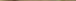

الإعلان عن
أسرار الفلسفة والعرفان
حسن الميلاني
|
المؤلف: المیلاني، حسن، 1338 ش العنوان والمؤلف: الإعلان عن أسرار الفلسفة والعرفان /حسن المیلاني الناشر: قم: عصر ظهور، 1391. عدد الصفحات: 88 ص. : التصویر، النموذج الإیداع الدولي: 9 ـ 53 ـ 6639 ـ 964 ـ 978 الموضوع: الفلسفة الإسلامية الموضوع: العرفان التسلسل الرقمي: 6 ألف 9 م / 13 BBR التسلسل الدیويي: 1 / 189 |
الإعلان عن أسرار الفلسفة والعرفان
المؤلف: حسن الميلاني
الناشر: عصر ظهور
المطبعة: سلیمان زادة
الطبعة: الأولی ـ 1391 ه. ش.
العدد: 2000 نسخة
رقم الإیداع الدولي: 9 ـ 53 ـ 6639 ـ 964 ـ 978
السعر: 2000 تومان
عصر ظهور (للطباعة والنشر)، ایران، قم، شارع شهداء
هاتف: 7741216 3 ـ 025 موبایل: 09121519078
بسم الله الرحمن الرحيم
قال الله سبحانه:
)لَوْ لا يَنْهاهُمُ الرَّبَّانِيُّونَ وَالأحْبارُ عَنْ قَوْلِهِمُ الإثْمَ
وَأَكْلِهِمُ السُّحْتَ لَبِئْسَ ما كانُوا يَصْنَعُونَ(.[1]
رسول الله صلى الله عليه وآله وسلم:
إِذَا ظَهَرَتِ الْبِدَعُ فِي أُمَّتِي فَلْيُظْهِرِ الْعَالِمُ عِلْمَهُ فَمَنْ لَمْ يَفْعَلْ فَعَلَيْهِ لَعْنَةُ الله.[2]
الإمام الباقر؟ع؟:
إِنَّ الاسْلامَ بَدَأَ غَرِيباً وسَيَعُودُ غَرِيباً فَطُوبَى لِلْغُرَبَاءِ... وسَيَأْتِي على النَّاسِ
زَمَانٌ لا يَعْرِفُونَ اللهَ مَا هُوَ وَالتَّوْحِيدَ.[3]
الإمام الصادق؟ع؟:
إيّاك أن تنصب رجلاً دون الحجّة فتصدّقه في كلّ ما قال.[4]
الخالق سبحانه وتعالى عندهم هو نفس وجود المخلوقات بأعيانها!
ما هو موقع الفلسفة من المعارف العقليّة السماويّة؟!
إله يفعل أفعالنا وأفعال الشياطين!
الجبر والاختيار من منظر الوحيّ الإلهيّ
هل من خالف الأفکار الفلسفيّة يكون جاهلاً وضدّ العقل؟!
عمر بن الخطاب أعقل من على+؟ع؟!
نظرة إجماليّة إلي كتابي نهاية الحكمة وبداية الحكمة
في وحدة وجود الخالق والمخلوق وعينيتهما «وحدة الوجود »
في وجوب وجود الممکنات وقدمها بعنوان أنّها مراتب ذات الله
في وجوب الخلق والرزق على الله تعالى وكونهما بالإشراق لا بالإيجاد
في نفي الحدوث الحقيقي ونفي مخلوقيّة العالم ونفي کونه ذا ابتداء
في الاعتقاد بالشباهة والسنخيّة بين ذات الله تعالى وخلقه
في إثبات الآلهة المتعدّدة وإسناد الخلقة والربوبيّة إلى غير الله تعالى
في تطوّر ذات الله بالأطوار المختلفة
في أنّ الباري تعالى عاجز عن خلق أکثر من شيء واحد
في تأويل الإرادة الإلهيّة إلى معنى علمه تعالی
في تأويل قدرة الله تعالى بمبدئيّة ذاته لصدور الأشياء
في الاعتقاد بالإجمال والتفصيل والحدوث في ذات الله تعالى وعلمه
في إثبات العلم الحصوليّ لله تعالى
في القول بالقضاء والقدر الجبريّين
في أنّ کلّ فعل هو فعل الله، وإبطال عقائد الشيعة باسم المعتزلة
هل الفلاسفة اليونانيّون کانوا أهل توحيد وأخلاق أم وثنييّن وضدّ الأخلاق؟!
نظرات بعض أساطين العلم في مسألة "وحدة الوجود"
نصّ الاستفتاء من المراجع في بعض المطالب الفلسفيّة والعرفانيّة
هناك نظریّتان:
الأولی) نظریّة الفلسفة والعرفان: وهذه النظريّة مبتنية على أن لا وجود إلاً لله! والله تعالى لم يخلق شيئاً! بل الله هو الذي يتطوّر بالأطوار المختلفة! والصور المتغايرة! والله هو عين الأشياء، حتى أنّهم ذهبوا إلى أنّ وجود الشيطان أيضاً ليس غيره تعالی!
الثانية) معتقد مدرسة البرهان والعقل والوحي الإلهي: وهو يختلف کلّيّاً عن النظريّة السالفة ويبتني على أنّ العالم يغاير وجود الله جلّ جلاله. والأشياء کلّها مخلوقات له تعالی، وهو الذي خلق کلّ شيء لا من شيء، وأحدث العالم لا من وجود سابق، بلا شريك ولا نظير. فليست المخلوقات وليدة وصادرة عن ذات الله سبحانه، ولا هي من مراتب وجوده، ولا أجزاؤه، ولا تجلّيات ذاته، ولا هي أشکال وصور مختلفة عن وجوده.
وعليه فلابدّ لنا من عرض بعض نصوص[5] أتباع الفلسفة والعرفان ممّا يخالفون به ضروريّات العقول والبراهين والأديان:
إنّ العقل والوحي يهديان إلى خالق متعال عن الخلق، وعن الزمان والمکان والأجزاء، وهو غير خلقه، لا تعرف ذاته لکونه متعالیاً عن الأجزاء والامتداد، ولا ينکر وجوده لامتناع وجود المخلوق بلا خالق، هذا ولکن الفلسفة والعرفان يدّعيان أنّه لا خالق ولا مخلوق، بل الوجود واحد، الخالق عين المخلوقات والأشياء، والأشياء هي الصور المختلفة المتبدّلة عن ذات الله المتطوّرة بالأطوار والراقصة في الأعيان، فلا يُعبَد شيء إلاً وهو الله حتى العجل والوثن، ولا کافر إلاً وهو مؤمن حتى فرعون وابليس! کما يقولون:
«واجب الوجود كلّ الأشياء، لا يخرج عنه شيء من الأشياء.»[6]
«سبحان من أظهر الأشياء وهو عينها.»[7]
«إنّ العارف من يرى الحقّ في كلّ شيء بل يراه عين كلّ شيء.»[8]
«الحقّ هو المشهود، والخلق موهوم.»[9]
«إنّ ذواتنا عين ذاته، لا مغايرة بينهما إلاً بالتعيّن والإطلاق... ذاته الّتي تعيّنت وظهرت في صورتنا.»[10]
«معيّة الحقّ سبحانه مع العبد ليست کمعيّة جسم مع جسم، بل يکون کمعيّة الماء مع الثلج، وکمعيّة اللبنة مع التراب.»[11]
«إنّها [الذات الإلهيّة] هي الظاهر بصور الحمار والحيوان.»[12]
«رأیت ربّي تبارك تعالی في صورة الفرس»؛ «رأیت ربّي جالساً على کرسیّة فسلّم عليّ فأجلسني على کرسیّة وقام بین یديّ وقال: أنت ربّي أنا عبدك!»[13]
«سبحان من... بدا في خلقه ظاهراً في صورة الآكل والشّارب.»[14]
«ما قلت أنا: "هذا الکلب هو الله". بل قلت: "ليس غير الله شيء"... الوجود بالأصالة وحقيقة الوجود في جميع العوالم... هو الله تبارك وتعالی!»[15]
«إنّ العالم بکلّه هو الله.»[16]
«إنّ غير المتناهي هو الصمد الحقّ بحيث لا يخلو منه شيء ولا يشذّ منه مثقال عشر عشر أعشار ذرة.»[17]
«لا يشذّ عنه وجود.»[18]
«الوجودات الإمكانيّة كائنة ما كانت... محاطة له بمعنى ما ليس بخارج.»[19]
«إنّ وجوده سبحانه غير متناه، وحيث يكون كذلك، فلا يمكن أن يفرض هناك وجود... إلّا والحقّ سبحانه واجد لها.»[20]
«إنّ غير المتناهي قد ملأ الوجود كلّه... فأين المجال لفرض غيره.»[21]
«والــــربط فـي مرحــلة الشــهــود
عيــن ظهــــور واجــب الـوجود»[22]
«كلّ ما عداه فهو فيضه، فلا يكون أمراً مبائناً عنه.»[23]
«الممکنات... کشؤون وروابط اللا حدّ، مثل الأمواج والبحر.»[24]
«التمثيل الذي يمکن أن يقال لتقريب معنى تشكيك أهل التحقيق هو ماء البحر وأمواجه، لأنّ الأمواج هي مظاهر الماء وليست شيئاً غير الماء، والتفاوت في عظم الأمواج وصغرها فقط.»[25]
«فاحكم بالعليّة ولكن تصرّف فيها بأنّها التشؤّن مثلاً لا التوحيد كما يقوله المعتزلي!»[26]
«الموجود من حيث إنّه موجود ليس إلاً ذات الحق، وفي صفحة الوجود ليس موجود إلاً ذات الله وتجليّاته.»[27]
«إنّ المعبود هو الحقّ في أيّ صورة كانت، سواء كانت حسّيّة كالأصنام، أو خياليّة كالجنّ، أو عقليّة كالملائكة.»[28]
«اعلم أنّه لا وجود ولا موجود سواه، وکلّ ما يطلق عليه اسم السوى فهو من شؤونه الذاتيّة وإطلاق السوى عليه من الجهل والغيّ لانغمارهم في الاعتبارات والأُمور الاعتباريّة وغفلتهم عن الحقيقة وأطوارها.»[29]
«ليس (العالم) إلاً وجود الحقّ الظاهر بصور الممكنات كلّها... فالوجود هو عين الحقّ، والممكنات ثابتة على عدمها في علم الحقّ، وهي شؤونه الذاتيّة. فالعالم صورة الحقّ والحقّ هو هويّة العالم وروحه... وبالجملة لا زال (الوجود الحقّ) ظاهراً باطناً، أوّلاً آخراً، واحداً كثيراً، خالقاً مخلوقاً، عبداً ربّاً... ولا شكّ أنّ إظهار مثل هذه الأسرار خلاف الأدب والشرع.فأمّا مع أهله فترك هذا الأدب أدب!»[30]
«إنّهم إذا اجتمعوا عند نبي أو إمام أو عارف وسألوا عن الحقّ، فقال هذا النبي أو الإمام أو العارف: انّ الحقّ الذي تسألون عنه وتطلبونه، هو معكم وأنتم معه، وهو محيط بكم وأنتم محاطون به، والمحيط لا ينفكّ عن المحاط... وهو ليس بغائب عنكم، ولا أنتم بغائبين عنه أينما توجّهتم، فثمّ ذاته ووجهه ووجوده. وهو مع كلّ شيء وعين كلّ شيء، بل هو كلّ شيء وكلّ شيء به قائم وبدونه زائل. وليس لغيره وجود أصلاً، لا ذهناً ولا خارجاً... فعرف ذلك بعضهم وقبل منه، وصار عارفاً موحّداً وأنكر ذلك بعضهم، ورجع عنه محجوباً مطروداً ملعوناً... هذا آخر التوحيد الوجوديّ وكيفيّته.»[31]
«... الموجود والوجود منحصر في حقيقة واحدة شخصيّة... وليس في دار الوجود غيره ديّار. وكلّ ما يترائى في عالم الوجود أنّه غير الواجب المعبود فإنّما هو من ظهورات ذاته وتجلّيات صفاته الّتي هي في الحقيقة عين ذاته... فكلّ ما ندركه فهو وجود الحقّ في أعيان الممكنات... فالعالم متوهّم، ما له وجود حقيقيّ. فهذا حكاية ما ذهبت إليه العرفاء الإلهيّون والأولياء المحقّقون.»[32]
«وأمّا تفسير حصر الوجود في الله بأن یکون الله هو الموجود بالذات وما سواه موجوداً بالغير وأن یکون الله مُوجِداً لغیره فلا یتلائم مع الوحدة الشخصيّة للوجود أبداً.»[33] «لیس موجود إلّا الله وکلّ ما یکون غیر وجهه فهو معدوم دائماً.»[34] «في العرفان لیست نسبة وجود العالم مع الواجب تعالى وجوداً رابطیّاً کالعرض، ولا وجوداً ربطیّاً کالحرف، وإصرار صدر المتألّهین (قدّس سرّه) على ذلك لا یفید شیئاً، لأنّ على أساس الوحدة الشخصيّة للوجود، فللوجود مصداق واحد فقط وهو الواجب الذى یکون مستقلّاً ولا مصداق لغیره أبداً.»[35]
(فلا وجه لما قد یقال تناقضاً:
«التناهي وعدمه من خواصّ الكمّ. وسيأتي في الإلهيّات بالمعنى الأخصّ أنّه عند ما يقال بأنّ الحقّ سبحانه وتعالي غير متناه فلا يراد به التناهي الذي يعرض الكمّ، فلو فرض وجود غير متناه آخر غير الله تعالى فإنّ هذا لا يجعله واجباً. إذ اللاتناهي في الواجب سبحانه وتعالى غير اللاتناهي الذي يعرض الكمّ!»[36]
فإنّ من الواضح أنّ من التفت إلى معنى اللامتناهي کما هو حقّه لا یرى مجالاً لوجود أيّ شيء آخر بوجه من الوجوه، وقد اعترف بذلك جمیع أساطین الفلسفة والعرفان والتصوّف. ویقول القائل نفسه:
«وأنّه تعالى غير متناهي الذات ولا محدودها، فلا يقابل ذاته ذات وإلّا لهدّده بالتحديد.»[37])
ومن نصوص أهل الفلسفة والعرفان:
«ليس شيء غيره تعالى وغير وجوده وإلّا يلزم التحديد.»[38]
«إعلم أنّ وصف الحقّ تعالى نفسه بالغني عن العالمين، إنّما هو لمن توهّم أنّ الله تعالى ليس عين العالم.»[39]
«إنّ واقع الأمر هو أنّه ليس في العالم شرك أصلا.»[40]
«الحقيقة مختصّة بذات الله، الذات مختصّة بحضرة ربّ العزة. فهل أنت ذات والله أیضاً هو ذات؟ هل أنت حقيقة والله أیضاً هو حقيقة؟ لا، لا، کلّا! هذا یکون غلطاً محضاً! یکون کفراً محضاً! إن کان هکذا فأنت أیضاً تکون موجوداً فى قبال الله! وأنت تکون واحداً والله یکون واحداً آخر!»[41]
«مرادنا عن وحدة الوجود، عينيّة وجود الأرض ووجود السماء مع وجود الحقّ المتعال.»[42]
«للإنسان قابليّة النيل إلى مقام الذات، وحيث يرى أنّه لا يقوى أن ينزل تلك الذات فيرتقي إلى أن يصير هو بنفسه إيّاه!»[43]
«نسبة الأعيان إلى الوجود الصمديّ، کنسبة
الجداول إلى البحر
الغير المتناهي.»[44]
«لا شيء موجودا أصلا حتى يکون مع الله، لا أنّ
هناك شيئاً وليس
مع الله.»[45]
«هو الواحد الجميع.»[46]
|
«آنـــان كه طـلـبكار خدايـــيد خداييــد |
|
بيـرون ز شـــما نيــست، شمايـيد شماييـــد |
|
ذاتيد و صــفاتيد، گهـى عرش وگهى فرش |
|
در عين بقـــاييـد و منـــزه ز فنـــــاييـد»[47] |
يعني: يا أيّها الذين تطلبون الله! أنتم الله بأنفسکم! ليس الله خارجاً عنکم! بل هو أنتم، هو أنتم! أنتم الذات، وأنتم الصفات، وأنتم في عين البقاء! وأنتم المنزّهون عن الفناء.
«ينبغي أن يدرك بحث وحدة الوجود صحيحاً... الموج من شؤون البحر! ولم يقل أحد إنّ الموج نفس البحر.»[48]
|
«من و ما و تو و او هست يك چيز |
|
كـه در وحـــدت نباشـد هيچ تمييز»[49] |
يعني: أنا، ونحن، وأنت، وهو، شي واحد، وذاك لأنّه ليس في الوحدة أيّ تمييز.
«أنا و أنت وهو صار هو!»[50]
«ذواتنا تکون بحسب الوجود عین ذاته ولا مغایرة بینهما إلّا بالتعیّن والإطلاق، التعیّن _ من العقل الأوّل إلى الهیولی الأولى _ یکون في مراتب الممکنات، والإطلاق یکون لجناب الوجود! والله من ورائهم محیط.»[51]
«وجود الحقّ المتعال عين [متن] وجود الجمادات والنباتات والحيوانات والناس، يعني ليس الموجود إثنين، بل کلّ الوجود یکون وجوداً واحداً قد ظهر في القوالب والمقادير المتفاوتة، لا أن يکون وجود الأرض غير وجود السماء، ووجود السماء غير وجود الحقّ المتعال.»[52]
«التعيّن يتصوّر على وجهين: إمّا بالتقابل کالبقر والغنم، وإمّا بالإحاطة المسمّاة بالإحاطة الشموليّة، ولا يمکن ميز بغير هذین الوجهین... وتعيّن الواجب تعالى من قبيل القسم الثاني؛ لأنّه ليس في مقابله شيء، وليس هو في مقابل شيء... خلاصة المطلب أنّ تمیّز المحیط الشامل عمّا دونه کتمیز الکلّ من حیث إنّه کلّ... ونسبة حقيقة الحقايق مع ما سواه المفروض تکون هکذا.»[53]
«المراد من وحدة الوجود... هو أنّه لا يشذّ عنه شيء.»[54]
«غيرتش غير در جهان نگذاشت
لا جرم عـين جملـــه اشيـا شــد.»[55]
يعني: ما أبقت غيرته شيئاً غيره، فصار عين الأشياء بأجمعها.
«إلهي، لا يصير الموج بحراً، ولکن يمکنه أن يتّصل به ويصير جدولاً منه.
إلهي، الموج مرتفع عن البحر، ويختلط معه، ويموج فيه، ولا بدّ له منه.
إلهي، کلّ أحد يقول: "أين الله؟"، وحسن يقول: "أين غير الله؟!"
إلهي، يطلبون منّي البرهان على التوحيد، ولکنّي أطلب الدليل على التكثير!
إلهي، يسألون عنّي: "التوحيد ما معناه؟" وحسن يقول: "التكثير ما معناه؟!"
إلهي، "الإثنان" ليسا بموجودين، و"الواحد" ليس له قرب ولا بعد.
إلهي، أنا أستحيي من قول: "أنا وأنت"، بل أنت أنت!
إلهي، شكراً لك! کنت أطلب بالأمس دليلاً لإثبات الخالق، والیوم أطلب الدليل لإثبات الخلق! أنت الکلّ!»[56]
«الإيجاد عبارة عن تجلّي سلطانه في الماهيّات الممکنة الغير المجعولة التي کانت مرايا لظهوره وسبباً لانبساط أشعّة نوره.»[57]
«أنت بنفسك الذکر والذاکر والمذکور.» [58]
«ما من وجود أو كمال وجوديّ إلّا والحقّ (تعالی) واجد له بنحو البساطة لأنّه بسيط الحقيقة، وبسيطة الحقيقة كلّ الأشياء. وعليه فالواجب (تعالی) لا متناه بل فوق ما لا يتناهي بما لا يتناهي.»[59]
وأقول: ولك أن تسألهم أنّهم ما يتصوّرون من معنى اللا متناهي حتى یمکنهم افتراض شيء فوق ما لا يتناهی! فضلا عن أن یکون فوق ما لا یتناهى بما لا یتناهی!!
ویقولون:
«إنّ صدر المتألّهين... بعد تبلور أفكاره في مسائل ومباحث الوجود ذهب إلى القول بالوحدة الشخصيّة للوجود، وهي عين رأي العرفاء الإلهيّين. وصرّح الشيرازي... يشير به إلى عدم وجود أيّ شيء في الوجود عدا الذات والصفات والأفعال الإلهيّة... يقول [ملا صدرا]: «... إنّ وجوده تعالى... يكون كلَّ الوجود ... فالحقيقة إذن واحدة وهي الحقّ تعالى، وما عداه شؤون وأطوار وانعكاس وظلّ لتجلّيات الذات الإلهيّة... كلّ ما في الكون وهمٌ أو خيال أو عكوسٌ في المرايا أو ظلال... ما نحن بصدده من ذي قبل إن شاء الله من إثبات وحدة الوجود والموجود ذاتاً وحقيقة، كما هو مذهب الأولياء والعرفاء... إنّ الوجودات... من مراتب تعيّنات الحقّ الأوّل.»[60]
أقول: ومع هذه التصريحات الواضحة فكيف يُغفل ويُدّعی:
«وهذه الوحدة التي قال بها صدر المتألّهين ليست هي وحدة الوجود العرفاني التي يقولها العارف والصوفيّ. ويعبِّر عنها بوحدة الوجود الشخصيّة!»[61]
إنّ أساس نظريّة وحدة وجود الله مع الأشياء هو هذا التوهّم الباطل الذي زعموا أنّ لله تعالى وجوداً امتداديّاً غير متناه مع أنّ من البديهيّ أنّ التناهي وعدم التناهي من خواصّ الجسم والشيء ذي الامتداد والأجزاء، والله جلّ وعلا لا يتّصف بخواصّ الأجسام أبداً. وعلى هذا فإن توهّم أحد أنّ الله يکون متناهياً أو غير متناه فقد جعل الله جسماً وإن لم يلتفت هو بنفسه إلى ذلك. والفلاسفة بأنفسهم أيضاً يعترفون بأنّ وصف التناهي وعدم التناهي من خواصّ الکمّيات والأجسام کما يقولون:
«النهاية واللا نهاية من الأعراض الذاتيّة التي تلحق الكمّ.»[62]
«الكمّ عرض... ويختصّ الكمّ بخواصّ... الخامسة النهاية واللا نهاية.»[63]
«المراد من التناهي هو الامتداد المحدود، والمراد من عدم التناهي هو الامتداد غير المحدود.»[64]
فهذان الوصفان _ التناهي وعدم التناهي _ ىکونان من خواصّ الأشياء ذوات الأجزاء والامتداد، الحادثة والممكنة والمخلوقة، وأمّا بالنسبة إلى الذات التي لا جزء لها ولا کلّ ولا امتداد فلا يقال المتناهي ولا غير المتناهي أصلا. بعبارة أخري "التناهي وعدم التناهي" ليسا معنيين نقيضين حتى يلزم من نفی أحدهما ثبوت الآخر دائماً، أو يلزم من ارتفاعهما معاً محال، بل هما يکونان "کالملكة وعدمها" فهما من صفات الأجسام والأشياء المتجزّئة والمخلوقة فقط، والله تعالى هو خالق کلّ الأشياء ذوات الامتداد والأجزاء الصغيرة أو الکبيرة، ومباين مع کلها بالذات. فالخالق تعالى ليس بصغير ولا کبير، ولا بمتناه ولا غير متناه.
ومن الجدیر بالذکر أنّ غىر المتناهي لا یمکن أن یوجد ویتحقق حتی في الأشیاء الامتدادیّة أبداً فضلاً عن ذات الله المتعالية عن الأجزاء والامتداد.
ثمّ خلافاً لتوهّم بعض آخر، ليست هناك أيّة رواية تدلّ علی کون الله تعالی غير متناه الوجود! بل الروايات التي تصف الله تعالی بکونه غیر محدود أو غیر متناه تدلّ علی أنّ الله جلّ وعلا لا يکون متناهياً فقطّ، وحسبما أوضحناه _ من کون الوصفين کالملکة وعدمها، وليسا نقيضين _ فلا تدلّ علی کونه تعالی غير متناه أصلا، بل هو متعال عن الامتداد والتناهی وعدمه بذاته.
الإمام أمير المؤمنين؟ع؟:
«ليس بذي كبر امتدت به النهايات فكبّرته تجسيماً، ولا بذي عظم تناهت به الغايات فعظّمته تجسيداً، بل كبر شأناً وعظم سلطاناً.»[65]
الإمام الصادق؟ع؟:
«إنّ الله تبارك وتعالی خلو من خلقه وخلقه خلو منه، وكلّ ما وقع عليه اسم شيء ما خلا الله عزّ وجلّ فهو مخلوق، والله خالق كلّ شيء، تبارك الذي ليس كمثله شيء.»[66]
«فإذا كان الخالق في صورة المخلوق فبما يستدلّ علی أنّ أحدهما خالق صاحبه؟!»[67]
الإمام الرضا؟ع؟:
«هو اللطيف الخبير السميع البصير الواحد الأحد الصمد الذي لم يلد ولم يولد ولم يكن له كفواً أحد، منشئ الأشياء، ومجسّم الأجسام، ومصوّر الصور، لو كان كما يقولون لم يعرف الخالق من المخلوق ولا المنشئ من المنشَأ، لكنّه المنشئ، فرق بين من جسّمه وصوّره وأنشأه، إذ كان لا يشبهه شيء، ولا يشبه هو شيئاً.»[68]
الإمام الجواد؟ع؟:
«إنّ ما سوى الواحد متجزّئ، والله واحد لا متجزّئ ولا متوهّم بالقلّة والكثرة، وكلّ متجزّئ أو متوهّم بالقلّة والكثرة، فهو مخلوق دالّ علی خالق له.»[69]
وبالجملة إنّ من الواضح:
1) أنّ جميع ما سوى الله تعالى هي أشياء قد خلقها الله تعالى بلا سابقة وجوديّة لها (لا من ذاته ولا من شيء آخر) وأسخف ما يعتقد به الإنسان هو أن يقول: إنّ الله تعالى قد تطوّر وتصوّر بصور الأشياء المختلفة، وليس في دار الوجود شيء إلاً ذات الله وتجلّياته وصور وجوده!
الإمام الرضا؟ع؟:
«ويحك، كيف تجترئ أن تصف ربّك بالتغير من حال إلى حال وأنّه يجري عليه ما يجري على المخلوقين؟!»[70]
2) يلزم على أساس عقيدة وحدة وجود الخالق والمخلوق أن يکون الله تعالى ذا زمان ومكان وحركة وسكون وانتقال وتغيّر وحدوث وزوال وجسميّة وصورة وشكل، وکلّ هذا يکون على خلاف البراهين المسلّمة والنصوص القطعيّة المتواترة، بل يکون خلاف ضرورة الدين.
3) أنّ عقيدة وحدة وجود الخالق والمخلوق تستلزم نفي خالقيّة الله المتعال، ونفي المخلوقيّة الحقيقيّة للعالم وذلك على خلاف ضرورة العقل والوحي.
4) أنّ عقيدة وحدة وجود الخالق والمخلوق تکون إنکار وجود الله في صورة اثبات واجب الوجود، وانحصار الوجود بالعالم المتغيّر.
5) أنّ عقيده وحدة وجود الخالق والمخلوق تستلزم بطلان الشريعة، ولغويّة إرسال الرسل ونصب الإمام وبطلان المعاد.
6) جميع أساطين العلم قد صرّحوا في مقام الفتوى وبيان العقيدة الصحيحة ببطلان العقيدة بکون الله والخلق شيئاً واحداً.
إنّ الفلاسفة اليونانييّن ما کانوا يقرّون بدين ولا بإله ولا بنبيّ و لا بمعاد أصلاً کما سنبيّن ذلك، والفلاسفة المسلمون قد جمعوا بین التوحید والشرك كما تراهم:
يقرّون بوجود الخالق بمقتضى إسلامهم حيناً، وينکرون وجوده ويعتبرونه نفس وجود الأشياء تبعاً لليونانييّن ولمبانيهم الفلسفيّة حيناً آخر حيث يحرّفون معنى الخلق إلى تطوّر ذات الله بالأطوار!
ويقولون إنّ العالم قد خلقه الله حيناً، ويقولون إنّ الله تجلّى في صورة العالم حيناً آخر حيث يأوّلون معنى الخلق إلى تجلّي ذات الله بالصور المختلفة!
ويقولون حيناً العالم حادث، وحيناً آخر یقولون العالم حادث ذاتيّ وقديم زمانيّ، فوجوده أزليّ ودائميّ! حيث يأوّلون معنى إحداث العالم وإيجاد الأعيان المخلوقة إلى معنى حدوث الصور المختلفة المتوالیة على ذات الله تعالى لا خلق أعيان الأشیاء لا من شيء، ويتناقضون في قولهم بکون العالم مخلوقاً ممکن الوجود وهومع ذلك قديم أزليّ!
قد يعترفون بنبوّة الأنبياء والوحي إليهم، وقد يقولون إنّ النبوّة حالة خاصّة من الحالات الطبيعيّة لعموم الناس کالحلم قد وصل إليها بعضهم، ولم يصل بعض آخر، فلا نبيّ هناك بالخصوص ولا وحياً إلهيّاً!
قد يقرّون بالأوصياء والأئمّة المعصومين عليهم السلام، وقد يبتدعون أمثالاً وأشباهاً ومنافسین لهم تحت عنوان الفيلسوف الإلهيّ والإنسان الکامل! وهو کلّ إنسان معارض للأنبياء والأوصياء علیهم السلام ومدعي شؤونهم بأن وصل إلى تلك المقامات بالرياضات والأعمال الشاقّة، بل يدّعون أنّ الانبياء والأئمّة عليهم السلام لا علم لهم إلاً بواسطة الملك ولکن أولياء الفلسفة والعرفان يتّصلون إلى+ المبدأ بلا واسطة!
قد يقولون بوجود المعاد والجنّة والنار والثواب والعقاب، وقد يقولون بأنّ کلّ ذلك تخيّلات وإنشاءات النفس، ثمّ يفنى کلّ شيء في ذات الله وليست هنالك جنّة ولا نار ولا مؤمن ولا کافر ولا ثواب ولا عقاب!
إنّ من الواضح على أساس ضرورة العقل والوحي أنّ تنزيه الله تعالى عن مشابهة المخلوقات هو أساس الدين والتوحيد، وأن الله تعالى لا شبيه له ولا نظير ولا زمان ولا مکان ولا امتداد ولا أجزاء، فالتشبيه باطل وکفر وزندقة وإلحاد، ولکن الفلسفة والعرفان تنفيان التنزيه، وتقولان بالتشبيه! کما یقولون:
«إنّ الحقّ المنزّه هو الخلق المشبّه!»[71]
«إنّها [الذات الإلهيّة] هي الظاهر بصور الحمار والحيوان.»[72]
«إنّ الله خلق الإنسان على صورة نفسه في ذاته وصفاته وأفعاله.»[73]
« فإنّه على صورته خلقه، بل هو عين هويته وحقيقته ولهذا ما عثر أحد من الحكماء والعلماء على معرفة النفس وحقيقتها إلاً الإلهيّون من الرسل والصوفيّة.»[74]
«إنّه يمکن القول بالتنظير بين الله والإنسان، أمّا ذاتاً فلأنّ الإنسان ونفسه الناطقة موجود مجرّد لا تأخذه سنة ولا نوم، وأمّا صفاتاً...»[75]
«إنّ الباري تعالى خلق النفس الإنسانيّة مثالاً له ذاتاً وصفاتاً وأفعالاً.»[76]
ويتناقضان في قولهم الواضح البطلان عند أيّ عاقل بالتنزيه في عين التشبيه! والتشبيه في عين التنزيه!:
«إعلم أنّ التنزيه عند أهل الحقايق في الجناب الإلهيّ عين التحديد والتقييد، والمنزّه إما جاهل وإما صاحب سوء أدب.»[77]
«يجب التحرّز عن التنزيه الصرف، كما يجب التنزه عن التشبيه المحض.»[78]
|
«فإن قلت
بالتشبيه كنت محدّداً |
وإن قلت
بالتنزيه كنت مقيّداً |
ولكن مدرسة الوحي الإلهيّ تقول موافقاً لما يخضع لديه العقل والبرهان:
قال الله تعالی:
«ما عرفني من شبّهني بخلقي.»[81]
الإمام الباقر؟ع؟:
«إنّ الله تعالى خلو من خلقه وخلقه خلو منه، وكلّ ما وقع عليه اسم شيء فهو مخلوق ما خلا الله عزّ وجلّ.»[82]
الإمام الصادق؟ع؟:
«التوحيد أن لا تجوّز على ربك ما جاز عليك.»[83]
«من شبّه الله بخلقه فهو مشرك، إن الله تبارك وتعالى لا يشبه شيئا ولا يشبهه شيء، وكلّ ما وقع في الوهم فهو بخلافه.»[84]
«... ومن شبّهه بخلقه فقد اتّخذ مع الله شريكاً ويلهم.»[85]
الإمام الكاظم؟ع؟:
«إنّ الله تعالى لا يشبهه شيء، أيّ فحش أو خناء أعظم من أن يوصف خالق الأشياء بجسم أو صورة، أو بخلقة، أو بتحديد وأعضاء، تعالى الله من ذلك علوّاً كبيراً.»[86]
الإمام الرضا؟ع؟:
«من شبّه الله بخلقه فهو مشرك... ثم تلا... «+إنما يفتري الكذب الذين لا يؤمنون بآيات الله وأولئك هم الكاذبون».[87]
یقولون:
«رجعت العليّة والإفاضة إلى تطوّر المبدأ الأوّل بأطواره.»[88]
«الفيض الأقدس ظهور الذات بكسوة الأسماء والصفات.»[89]
«إنّ الأثر ليس شيئاً على حياله بل هو ظهور مبدئه.»[90]
|
«وفعــله وهــــو
تجـــلّي نوره |
تشــاًن الــــظاهر
في ظــهوره |
«الوجود... هو الذي يلزمه جميع الكمالات... فهو الحيّ العليم المريد القادر السميع البصير المتكلّم بذاته... بل هو الذي يظهر بتجلّيه وتحوّله في صور مختلفة... فهو الواجب الوجود الحقّ سبحانه وتعالى... وإيجاده للأشياء اختفاؤه فيها مع إظهاره إياها، و إعدامه لها في القيامة الكبرى ظهوره بوحدته وقهره إيّاها بإزالة تعيّناتها.»[93]
«ليس وجود في الخارج إلاً وجود الحقّ متلبّساً بصور أحوال الممكنات فلا يلتذّ بتجلّياته إلاً الحقّ، ولا يتألّم منه سواه.»[94]
«لا عليّة ولا معلوليّة ولا جاعليّة ولا مجعوليّة في الوجود، ولنفي التغاير فيه إنّما الأمر بالكمون والبروز، فتبصّر!»[95]
«الاستجلاء... عبارة عن ظهور ذات الحقّ لنفسه في التعيّنات، يعني في التعيّنات الخلقيّة.»[96]
|
+«سبحان مـــن أظهر ناسوته |
ســـرّ سنـــا لاهــــوته
الثاقب |
«قال الشيخ الرئيس في بعض رسائله: الخير الأول بذاته ظاهر متجلّ لجميع الموجودات... بل ذاته بذاته متجلّ... وليس تجلّيه إلاً حقيقة ذاته (لأنّ تجلّيه ظهوره وظهور الشيء ليس مبايناً عنه وإلّا لم يكن ظهور ذاك الشيء.»[99]
«ليعتبر جميع الحقائق التي تکون موجودة على الظاهر ظهورات لذلك الوجود الواحد الأحد الذي يظهر في لباس المخلوقات وفي قالب معين ومحدود.»[100]
|
«هر لحــظه به
شكلى بــت عيّار بر آمد |
دل
برد و نهان شد |
يعني: أنّ الوثن المحبوب تشکّل في کلّ لحظة بشکل جديد فعشقناه فغاب عنّا. وفي کلّ آن تلبّس بلباس غير الآخر فصار حيناً شيخاً وحيناً شابّاً. لا بل هو الذي کان يقول: "أنا الحقّ" حینما هو في صورة البلهاء. والذي صُلِب لم يکن هو الحلاج کما زعم الجاهل ذالك.
ولکن العقل والوحي يقولان:
+«فلما أفل قال لا أحب الآفلين».»[102]
«+فلما أفلت قال: يا قوم إني بريء مما تشركون».[103]
الإمام أمير المؤمنين؟ع؟:
«تعالى عما ينحله المُحَدِّدون من صفات الأقدار ونهايات الأقطار وتأثّل المساكن وتمكّن الأماكن، فالحدّ لخلقه مضروب وإلى غيره منسوب.»[104]
«أيّها السائل؛ إعلم أنّ من شبّه ربّنا الجليل بتبائن أعضاء خلقه، وبتلاحم أحقاق مفاصلهم المحتجبة بتدبير حكمته أنّه لم يعقد غيب ضميره على معرفته، ولم يشاهد قلبه اليقين بأنّه لا ندّ له، كأنّه لم يسمع بتبرّي التابعين عن المتبوعين، وهم يقولون "+تالله إن كنا لفي ضلال مبين إذ نسويكم برب العالمين" فمن ساوى ربّنا بشيء فقد عدل به، والعادل به كافر بما نزلت به محكمات آياته، ونطقت به شواهد حجج بيناته، الذي لمّا شبّهه العادلون بالخلق المبعّض المحدود في صفاته، ذي الأقطار والنواحي المختلفة في طبقاته، وكان عزّ وجلّ الموجود بنفسه لا بأداته، انتفى أن يكون قدّروه حقّ قدره فقال تنزیهاً لنفسه عن مشاركة الأنداد وارتفاعاً عن قياس المقدّرين له بالحدود من كفرة العباد: "+وما قدروا الله حقّ قدره والأرض جميعا قبضته يوم القيامة والسموات مطويات بيمينه سبحانه وتعالى عما يشركون". فما دلّك القرآن عليه من صفته فأتبعه ليوصل بينك وبين معرفته وائتمّ به، واستضئ بنور هدايته، فإنّها نعمة وحكمة أوتيتها فخذ ما أوتيت وكن من الشاكرين. وما دلّك عليه الشيطان ممّا ليس في القرآن عليك فرضه ولا في سنّة الرسول وأئمّة الهدى أثره فكل علمه إلى الله عزّ وجلّ، فإنّ ذلك منتهى حقّ الله عليك...»[105]
قالوا:
«وهذا الإطلاق الحقيقيّ الإحاطيّ حائز للجميع، ولا
يشذّ عن
حيطته شيء.»[106]
«إنّ الله سبحانه موجود مطلق لا يعزب عن شيء ولا يعزب عنه شيء.»[107]
«هو مجمع الموجودات ومرجع الكلّ والجميع مظاهر أسمائه ومجالي صفاته.»[108]
«إنّ تمام الشيء هو الشيء وما يفضل عليه.»[109]
«الوجود الحقّ المطلق لا يغاير الکلّ ولا يغاير البعض لکون کلّية الکلّ وجزئيّة الجزء نسبا ذاتيّة له، فهو لا ينحصر في الجزء، ولا في الکلّ، فهو مع کونه فيهما +عينهما يغاير کلّا منهما في خصوصهما.»[110]
«توحيد عرشيّ: إعلم أنّ ذاته تعالی... هو وجود الأشياء... فهو كلّ الذوات ولا يشذّ عنه شيء من الموجودات.»[111]
«العلّة المبدأ الفيّاضة يشتمل على وجود جميع المعلولات، بوجود جمعيّ... نظير جامعيّة الجملة والكلّ بالنسبة إلى الأجزاء والآحاد.»[112]
«التعيّن يتصوّر على وجهين: إمّا بالتقابل کالبقر والغنم، وإمّا بالإحاطة المسماة بالإحاطة الشموليّة، ولا يمکن ميز بغير هذین الوجهین... وتعيّن الواجب تعالى من قبيل القسم الثاني؛ لأنّه ليس في مقابله شيء، وليس هو في مقابل شيء... خلاصة المطلب أنّ تمیّز المحیط الشامل عمّا دونه کتمیّز الکلّ من حیث إنّه کلّ... ونسبة حقيقة الحقايق مع ما سواه المفروض تکون هکذا.»[113]
«إنّ دعوة الأنبياء هي هذه: أيّها الأجنبيّ عنّي بالصورة! أنت جزء منّي... فتعال أيّها الجزء، لا تکن غافلاً عن الکلّ!»[114]
«جميع الأشياء کانت مندرجة في مقام الذات... کلّ الذرات تشعشعت من هناك.»[115]
«إذاً ينبغي أن يکون الهدف الأسمى هو العود إلى ذلك الأصل واندراج وانطفاء ذواتنا في طيّ الذات الواجبيّة، کما تندرج القطرة في البحر، وهذا هو معنى الفناء الحقیقيّ للذات، فلا غضاضة بعد ذلك إذا ما سئلت القطرة ما أنت؟ فتقول: أنا البحر!»[116]
ولکن نرى في مدرسة الوحي والبرهان:
الإمام أمير المؤمنين؟ع؟:
«ومن جزأه فقد جهله.»[117]
الإمام الباقر؟ع؟:
«إنّ الله تعالى خلو من خلقه وخلقه خلو منه، وكلّ ما وقع عليه إسم شيء فهو مخلوق ما خلا الله عزّ وجلّ.»[118]
«سألت أبا عبد الله؟ع؟ عن قول الله عزّ وجلّ "+وهو الله في السموات وفي الأرض" قال: كذلك هو في كلّ مكان، قلت: بذاته؟! قال: ويحك إنّ الأماكن أقدار، فإذا قلت في مكان بذاته لزمك أن تقول في أقدار وغير ذلك، ولكن هو بائن من خلقه، محيط بما خلق علماً وقدرة وإحاطة وسلطاناً، وليس علمه بما في الأرض بأقلّ ممّا في السماء، لا يبعد منه شيء والأشياء له سواء علماً وقدرة وسلطاناً وملكاً وإحاطة.»[119]
الإمام الصادق؟ع؟:
«فردانيّ لا خلقه فيه ولا هو في خلقه.»[120]
«إنّه لا يليق بالذي هو خالق كلّ شيء إلّا أن يكون مبائناً لكلّ شيء، متعالياً عن كلّ شيء، سبحانه وتعالى.»[121]
«هو واحد، أحديّ الذات، بائن من خلقه... محيط بالأشراف والأحاطة والقدرة... بالأحاطة والعلم لا بالذات.»[122]
الإمام الرضا؟ع؟:
«كنهه تفريق بينه وبين خلقه، وغيوره تحديد لما سواه.»[123]
«كلّ ما يوجد في الخلق لا يوجد في خالقه، وكلّ ما يمكن فيه يمتنع في صانعه.»[124]
«قال الإمام الرضا؟ع؟ لابن قرّة النصراني: ما تقول في المسيح؟ قال: يا سيّدي إنّه من الله، فقال: وما تريد بقولك "من"؟ و"من" على أربعة أوجه لا خامس لها، أتريد بقولك "من"، كـ "البعض من الكلّ" فيكون مبعّضاً؟ أو كـ "الخلّ من الخمر" فيكون على سبيل الاستحالة؟ أو كـ "الولد من الوالد" فيكون على سبيل المناكحة؟ أو كـ "الصنعة من الصانع" فيكون على سبيل المخلوق من الخالق؟ أو عندك وجه آخر فتعرّفناه؟ فانقطع.»[125]
قالوا:
«كلّ ما ندركه فهو وجود الحقّ في أعيان الممكنات... فهذا حكاية ما ذهب إليه العرفاء الإلهيّون والأولياء المحقّقون.»[126]
«وكلّ ما يترائى في عالم الوجود أنّه غير الواجب المعبود فإنّما هو... في الحقيقة عين ذاته.»[127]
«مشاهدته، ولهيّة واندکاکيّة؛ والإنسان لا يقدر أن يتفوّه بشيء.»[128]
«إنّ ظهوره تعالى يکون بظهوره الذاتيّ. فما قيل: "إنّه تعالى ظاهر بالاستدلال"، ضعيف جدّاً.»[129]
ويقول الوحي والعقل:
الإمام سیّد الشهداء؟ع؟:
«احتجب عن القلوب كما احتجب عن الأبصار، وعمّن في السماء احتجابه عمّن في الأرض.»[130]
«قلت للصادق جعفر بن محمّد عليهما السلام: إنّ رجلاً رأى ربّه عزّ وجلّ في منامه! فما يكون ذلك!؟ فقال: ذاك رجل لا دين له، إنّ الله تبارك وتعالى لا يرى في اليقظة ولا في المنام ولا في الدنيا ولا في الآخرة.»[131]
«سألت أبا عبد الله جعفر بن محمّد عليهما السلام عن الله تبارك وتعالى هل يرى في المعاد؟! فقال: سبحان الله وتعالى عن ذلك علوّاً كبيراً! يابن الفضل، إنّ الأبصار لا تدرك إلّا ما له لون وكيفيّة، والله خالق الألوان والكيفيّة.»[132]
الإمام الجواد؟ع؟:
«محرّم على القلوب أن تحتمله.»[133]
«ذات الباري ... علّة ومعلولة.»[134]
«الوجود هو عين الحقّ... وبالجملة لا زال (الوجود الحقّ) ظاهراً باطناً... خالقاً مخلوقاً، عبداً ربّاً... ولا شكّ أنّ إظهار مثل هذه الأسرار خلاف الأدب والشرع. فأمّا مع أهله فترك هذا الأدب أدب!»[135]
إنّ حدوث العالم _ حتى نفس الزمان _ من ضروريّات العقول والأديان ومع هذا تقول الفلسفه والعرفان:
«العالم قديم.»[136]
«إنّ العقول المفارقة خارجة عن الحكم بالحدوث لكونها ملحقة بالصقع الربوبيّ... فكأنّها موجودة بوجوده تعالى لا بإيجاده.»[137]
«لا هويّة من الهويّات ولا شخص من الأشخاص فلكاً كان أو عنصراً، بسيطاً كان أو مركّباً، جوهراً كان أو عرضاً إلاً وقد سبق عدمُه وجودَه ووجودُه عدمَه سبقاً زمانيّاً.»[138]
«الفيض من عند الله باق دائم.»[139]
«صدور الموجودات عنه على سبيل اللزوم... وكان صدورها عنه دائماً.»[140]
«إنّ من قال بحدوث الزمان فقد قال بقدمه من حيث لا يشعر.»[141]
«المتكلّمون يقولون: العالم حادث زمانيّ بمعنى أنّه إن رجعنا قهقری... نصل بالأخرة إلى لحظة حدث العالم ولم يکن قبل ذلك موجوداً. يقولون: إن لم يکن العالم حادثاً زمانيّاً لکان قديماً زمانيّاً، وإن کان قديماً زمانيّاً فکان مستغنياً عن العلّة والخالق... أمّا الحكماء الإلهيّون يعتقدون أنّ العالم قديم؛ يعني أنّ أصول وأركان العالم تکون أزليّة، ومن حيث الزمان کلّما رجعنا قهقرى لم نصل إلى مبدأ وآن حدوث، ليس للزمان ابتداء ولا انتهاء. إنّه على حسب نظر الحكماء الإلهييّن يکون "كلّ حادث مسبوقاً بمادّة ومدّة؛ يعني أنّ کلّ شيء حادث کانت له قبل ذلك مادّة حاملة للاستعداد، وأنّ قبله زمان آخر".»[142]
ولکن في مدرسة العقل والبرهان والأدیان فهذه نبذة من النصوص الدالّة على حدوث مطلق ما سوى الله تعالى:
الإمام أمير المؤمنين؟ع؟:
«ولو كان قديماً لكان إلهاً ثانياً.»[143]
الإمام الباقر؟ع؟:
«إنّ الله تبارك وتعالى... خلق الأشياء لا من شيء، ومن زعم أنّ الله عزّ وجلّ خلق الأشياء من شيء فقد كفر، لأنّه لو كان ذلك الشـيء الذي خلق منه الأشياء قديماً معه في أزليّته وهويّته، كان ذلك الشيء أزليّاً.»[144]
«كلّ ما وقع عليه اسم شيء فهو مخلوق ما خلا الله عزّ وجلّ.»[145]
الإمام الصادق؟ع؟:
«فبما يستدلّ على أنّ أحدهما خالق لصاحبه؟!»[146]
« قال رسول الله صلى الله عليه وآله وسلّم... لا نقول كما قالت الدهريّة إنّ الأشياء لا بدو لها وهي دائمة.»[147]
الإمام الرضا؟ع؟:
«لأنّه لم يزل معه، فكيف يكون خالقاً لمن يزل معه؟!»[148]
«وإنّ كلّ صانع شيء فمن شيء صنع، والله الخالق اللطيف الجليل خلق وصنع لا من شيء.»[149]
«ثمّ قال الزنديق: من أيّ شيء خلق الأشياء؟ قال؟ع؟: لا من شيء... قال: فمن أين قالوا: إنّ الأشياء أزليّة؟! قال: هذه مقالة قوم جحدوا مدبر الأشياء... فكذّبوا الرسل ومقالتهم والأنبياء وما أنبئوا عنه، وسمّوا كتبهم أساطير الأوّلين، ووضعوا لأنفسهم ديناً بآرائهم واستحسانهم.»[150]
«إنّما هو الله عزّ وجلّ وخلقه لا ثالث بينهما ولا ثالث غيرهما، فما خلق الله عزّ وجلّ لم يعدُ أن يكون خلقه.»[151]
«المشيئة والإرادة من صفات الأفعال، فمن زعم أنّ الله تعالى لم يزل مريداً شائياً فليس بموحّد.»[152]
قالوا:
«فهو العابد باعتبار تعيّنه وتقيّده بصورة العبد الذي هو شأن من شؤونه الذاتيّة وهو المعبود باعتبار إطلاقه.»[153]
«فيحمدني وأحمده، ويعبدني وأعبده.»[154]
«وكان موسى أعلم بالأمر من هارون لأنّه علم ما عبده أصحاب العجل، لعلمه بأنّ الله قد قضى ألا يعبد إلاً إيّاه: وما حكم الله بشيء إلاً وقع. فكان عتب موسى أخاه هارون لما وقع الأمر في إنكاره وعدم اتّساعه، فان العارف من يرى الحقّ في كلّ شيء، بل يراه عين كلّ شيء.»[155] «والعارف المكمّل من رأى كلّ معبود مجلى للحقّ يعبد فيه، ولذلك سمّوه كلّهم إلهاً مع اسمه الخاصّ بحجر أو شجر أو حيوان أو إنسان أو كوكب أو ملك.»[156]
«لا إله إلاً أنا ها فاعبدون!»[157]
|
|
يعني: شيخي ومرادي، دائي ودوائي، أفشيت الکلام: شمسي وإلهي! [القائل هو مولويّ محمد البلخيّ الروميّ، وقطبه وإلهه هو "محمد ملك داد" الملقب عند أوليائه بالشمس التبريزي].
|
«مسلمان گر بدانستى كه بــــت چيست |
|
بدانسـتى كه ديــن در بتپرستى است[159] |
|
بـــت پرستــــى ارادة الله اســـــــت |
|
پس کسـى را از آن چه اکـــراه است؟» |
يعني: أنّ المسلم لو کان يعلم ويدرك أنّ الصنم ما هو؟ لعلم أنّ الدين يکون في عباده الوثن والصنم. أنّ عبادة الصنم والوثن هي إرادة الله فأيّ کراهيّة في ذلك لأحد؟!
«واقع الأمر هو أنّه لا يکون في العالم شرك بأيّ وجه.»[160]
«فلا بدّ أن يكون الخالق عين كلّ صورة يعبدها المخلوق مع افتقار الصورة إلى المادّة... وقد قال +وقَضى رَبُّكَ أَلا تَعْبُدُوا إلاً إِيَّاهُ... ولا قضى أن يعبد غير الله، فلا بدّ أن يكون هو عين كلّ شيء، أي عين كلّ ما يفتقر إليه وعين ما يعبد كما أنّه عين العابد من كلّ عابد... وأمّا وصفه بالغني عن العالم إنّما هو لمن توهّم أنّ الله تعالى ليس عين العالم.»[161]
«ولمّا کان أجزاء العالم مظاهر الله الواحد القهّار بحسب أسماء اللطفيّة والقهريّة کان عبادة الإنسان لأيّ معبود کانت عبادة الله اختياراً أيضاً... فالإنسان في عبادتها اختياراً للشيطان کالإنسيّة وللجنّ کالکهنة وتابعي الجنّ وللعناصر کالزردوشتيّة وعابدي الماء والهواء والأرض وللموإليد کالوثنيّة وعابدي الأحجار والأشجار والنباتات وکالسامريّة وبعض الهنود الذين يعبدون سائر الحيوانات والجمشيديّة والفرعونيّة الذين يعبدون الإنسان... وللذکر والفرج کبعض الهنود القائلين بعبادة ذکر الإنسان وفرجه وکالبعض الآخر القائلين بعبادة ذکر مهاديو ملکاً عظيماً من الملائکة وفرج امرئته کلّهم عابدون لله من حيث لا يشعرون لأنّ کلّ المعبودات مظاهر له باختلاف أسمائه!»[162]
«إنّ المسلم الذي يعتقد بالتوحيد وينکر عبادة الوثن إن کان يعلم ويفهم ما هو الوثن في الحقيقة، ومظهر أيّ احد، والظاهر بصورة الصنم أيّ شخص، لعلم وأقرّ أنّ الدين الحقّ هو عبادة الصنم والوثن... الصنم أيضاً صنعه الله وخلقه، والله أيضاً هو الذي أمر أن يکونوا عابدي الوثن والصنم... والحقّ هو الذي ظهر في صورة الوثن... وحيث إنّه هو تجلّى وظهر في صورة الوثن، فکان حسناً ومستحسناً... لأنّه ليس في الحقيقة موجود غير الحقّ، وکلّ ما يکون موجوداً فهو الحقّ.»[163]
«إنّك بنفسك الذكر والذاكر والمذكور.»[164]
«أنت بنفسك ذكر وذاكر ومذكور... وبتعبير آخر: إنّ الوحدة الشخصيّة الحقّة الحقيقيّة للوجود هو هذا المعنی، وبعبارة أخری: بسيط الحقيقة كلّ الأشياء.»[165]
قالوا ما تلخیصه:
«إنّ الله هو الفاعل والمنفعل في مجامعة الرجل للمرأة ومواقعتها! وهذا هو مقتضى الوحدة الشخصيّة للوجود! إنّ حقيقة خلق الله تعالى هي مثل توليد الإنسان من منيّه! وهذا مقتضى معارف القرآن والروايات وعلوم أهل البيت عليهم السلام!»[166]
يقول الفلسفة والعرفان:
«نشأة الملك، وناسوت العالم متولّد عن مقام اللاهوت، بل کلّ معلول وليد علّته... فعليك بالتدقيق کثيراً حتى تصل إلى عمق المطلب!!»[167]
«من الواجب أن يكون بين المعلول وعلته سنخيّة ذاتيّة.»[168]
ويقول الله تعالى:
«+لم يلد ولم يولد.»
«+وقالوا اتّخذ الرحمن ولداً. لقد جئتم شيئاً إدّا. تكاد السموات يتفطّرن منه وتنشقّ الأرض وتخرّ الجبال هدّاً. أن دعوا للرحمن ولداً. وما ينبغي للرحمن أن يتّخذ ولداً. إن كل من في السموات والأرض إلا أتي الرحمن عبدا لقد أحصاهم وعدّهم عدّا».[169]
«+ما كان للّه أن
يتخذ من ولد، سبحانه إذا قضى أمرا فإنما يقول له
كن فيكون».[170]
«+ألا إنهم من إفكهم ليقولون ولد الله وأنهم لكاذبون».[171]
«سألت أبا جعفر؟ع؟ عمّا يروون أنّ الله عزّ وجلّ خلق آدم على صورته؟ فقال: هي صورة محدثه مخلوقة اصطفاها الله واختارها على سائر الصور المختلفة فأضافها إلى نفسه كما أضاف الكعبة إلى نفسه والروح إلى نفسه فقال: "بيتي"، وقال: "+نفخت فيه من روحي".»[172]
الإمام أبو عبد الله الصادق؟ع؟:
«سبحان الله الذي ليس كمثله شيء، ولا تدركه الأبصار، ولا يحيط به علم، لم يلد لأنّ الوالد يشبه أباه، ولم يولد فيشبه من كان قبله، ولم يكن له من خلقه كفواً أحد، تعالى عن صفة من سواه علوّاً كبيراً.»[173]
«إنّ الله تبارك وتعالى أحد صمد ليس له جوف وإنّما الروح خلق من خلقه.»[174]
الإمام ابو الحسن الرضا؟ع؟:
«إنّ كلّ صانع شيء فمن شيء صنع، والله الخالق اللطيف الجليل خلق وصنع لا من شيء.»[175]
«كتبت إلى أبي الحسن الرضا؟ع؟: سألته عن آدم: هل كان فيه من جوهريّة الربّ شيء؟! فكتب إليّ جواب كتابي: ليس صاحب هذه المسألة على شيء من السنّة، زنديق.»[176]
صدر الفلاسفة يعتبر الشيطان ذا نور يستحق بذلك العبادة، ويسمّي المخالف لهذا أحمق وجاهلاً ومجنوناً ويقول:
«قال الحلّاج ما صحّت الفتوّة إلاً لأحمد وإبليس... إعلم أنّه ما من شيء في العالم إلاً وأصله من حقيقة إلهيّة وسرّه من اسم إلهيّ وهذا لا يعرفه إلاً الكاملون... هو مجمع الموجودات ومرجع الكلّ، والجميع مظاهر أسمائه ومجإلي صفاته... فافهم يا حبيبي هذه الكلمات وقد انتهت إلى ما يتبلّد الأذهان عن دركها، ويتحرّك سلسلة الحمقى والمجانين عن سماعها، ويشمئز قلوبهم عن روائحها كاشمئزاز المزكوم عن رائحة الورد الأحمر والمسك الأذفر. وتنبّه لما قيل إنّ نور إبليس من نار العزّة لقوله تعالى +خَلَقْتَنِي مِنْ نارٍ ولو أظهر نوره للخلائق لعبدوه.»[177]
قالوا:
«ما من شيء ممكن موجود سوى الواجب بالذات حتّى الأفعال
الاختياريّة، إلاً وهو فعل الواجب بالذات، معلول له بلا واسطة أو بواسطة
أو وسائط.»[178]
«لا فعل في الخارج إلّا فعله سبحانه، وهذه حقيقة يدلّ عليه البرهان والذوق معاً [يعني الفلسفة والعرفان].»[179]
«الشيء ما لم يجب لم يوجد.»[180]
والعرفان قد اجترء بأکثر من الفلسفة وقال ليس موجود غير الله حتى يمکن البحث عن کونه مجبوراً أو مختاراً:
|
|
يعني: أيّها الرجل الجاهل! أيّ اختيار يکون لمن تکون ذاته باطلة؟إذا کان وجودك بکلّه معدوماً ألا تخبرني کيف ومن أين کان لك اختيار؟! کلّ من کان مذهبه غير الجبر، فقد قال النبيّ هو مثل المجوس!
«لا فعل فى الخارج إلّا فعله سبحانه.»[182]
«الفاعل في کلّ موطن هو الله، ولا مؤثر إلاً هو.»[183]
«کلّ فعل يتحقّق في العالم ففاعله هو الله.»[184]
وهذا هو شيخ عرفانهم محمد مولويّ البلخيّ الروميّ يقول موافقاً لساير الجبريين من أمثاله السنييّن، ويبرّر "ابن ملجم" ويعتبره آلة الحق! وغير قابل للطعن واللوم!! ويقول دفاعاً عن الخوارج والنواصب وافتراءاً+ على أمير المؤمنین علیه السلام، خطاباً لابن ملجم:
|
|
يعني: ليس في قلبي أيّ بغض لك، لأنّي لا أرى هذا منك! أنت آلة الحقّ، والفاعل هو يد الحقّ، فکيف أطعن وأعترض أنا على الحقّ؟ فکن مسروراً غير محزون، أنا شفيع لك، وأنا أمير الروح ولا أکون مملوك الجسم.
|
|
يعني: أنّ خلقة الحقّ تکون موجدة لأفعالنا. وأنّ فعلنا هو من آثار خلق الله.
[ويقول شيخهم هذا في موضع آخر:
+اينکه گويى آن کنم يا آن کنم، اين دليل اختيار است اى صنم.
يعني: أنّ قولك بأنّه أ أفعل هذا أم ذاك، هو دليل على اختيارك. ولکنّ مراده من ذلك هو نظريّة الکسب الأشعريّ لا الاختيار الواقعيّ ونفي الجبر، فلا تغفل.]
قالوا:
«ليس في الوجود فعل إلاً وهو فعله... فهو مع غاية عظمته وعلوّه ينزل منازل الأشياء ويفعل فعلها... فعين الكلب نجس ولکن الوجود الفائض عليه بما هو وجود طاهر العين، وكذا الكافر نجس العين من حيث ماهيّته وعينه الثابت لا من حيث وجوده لأنّه طاهر الأصل.»[187]
«کلّ واحد من الممكنات يکون مظهر اسم واحد من أسماء الحق، بيان هذا الکلام واستماعه وإن يکن ثقيلاً جدّاً ولکن الحقيقة هي أنّ الشيطان أيضاً يکون مظهر اسم "يا مضلّ"!»[188]
«کلّ فعل يحدث في العالم ففاعله هو.»[189]
«کلّ الوجود قد صدر عن الحقّ، وکلّ الأشياء يکون حقّاً، والباطل لا يصبغ بالوجود أصلاً.»[190]
«إنّ الإيجاد هو عن ذات الحقّ المتعال، ولکن الإسناد
يجب أن يکون
إلى العبد.»[191]
رسول الله صلى الله عليه وآله:
«يكون في آخر الزمان قوم يعملون المعاصي ويقولون إنّ الله قد قدَّرها عليهم، الرادّ عليهم كشاهر سيفه في سبيل الله.»[192]
الإمام الرضا +عليه السلام:
«من قال بالتَّشبيه والجبر فهو كافرٌ مشرك، ونحن منه براء في الدنيا والآخرة.»[193]
إنّ عقاب الکافر وخلوده في النار من مسلّمات القرآن وضروريّات مدرسة الوحي ولکنّه تقول الفلسفة والعرفان ردّاً على مسلّمات القرآن:
«إنّ العذاب ليس أبديّاً... التعذيب يکون سبب شهود الحقّ وهذا الشهود للحقّ أسنى نعمة تقع في حقّ العارف.»[194]
«ينقلب العذاب عذباً عند أهل النار.»[195]
«وإنّ دخلوا دار الشقاء فإنّهم على لذّة فيها نعيم مباين... إنّ العذاب أيضاً نعيم يستلذّ به أهله.»[196]
«وبالنسبة إلى الكافرين أيضاً وإن كان العذاب عظيماً، لكنّهم لم يتعذّبوا به، لرضاهم بما هم فيه، فإنّ استعدادهم يطلب ذلك.»[197]
«إنّ العارف يرى المعذّب [الله] في تعذيبه، فالتعذيب يصير سبب شهود الحقّ، وهذا الشهود للحقّ أعظم نعمة تتحقّق في حقّ العارف. وأمّا بالنسبة إلى المشركين اللذين يعبدون غير الله من الموجودات... فلا يعبدون إلاً الله "فرضي الله عنهم من هذا الوجه" فالعذاب في حقّهم يصير عذباً.»[198]
«مآل أهل النار أيضاً إلى النعيم المناسب لأهل الجحيم. إمّا بالخلاص من العذاب، أو الالتذاذ به بالتعوّد... كما جاء: "يُنبت في قعر جهنّم الجرجير".»[199]
ويقول الإمام الرضا؟ع؟:
«ما أحمق بعض الناس يقولون ينبت في وادي جهنم! والله تبارك وتعالى يقول +وَقُودُهَا النَّاسُ وَالْحِجارَةُ فكيف ينبت البقل؟!»[200]
قالوا:
«إنّها [الآخرة] ليست إلاً منشئات النفس القائمة بها.»[201]
الفلسفة والعرفان يجوّزان اجتماع النقيضين! ويقدّمان الأوهام الکشفيّة على العقل والبرهان:
«خلاصة الکلام هو أنّه من جهة العقل النظريّ إنّ الشيء الواحد يعني عين الذات الخارجيّة في الصورة التي تکون علّة لا تکون معلولة، ولکن في هذا النظر الذي هو فوق الحكم العقليّ والذي هو حكم الكشف والشهود أنّ الذات مجمع الأضداد، ومتّصفة بالضدين، وجامعة النقيضين... إنّ ذات الباري... تکون علّة ومعلولة!»[202]
إنّ مذهب السفسطة ونفي وجود ما سوى الله والتفوّه بأنّ العالم موهوم لهي عقيدة باطلة على أساس ضرورة العقل والبرهان، وبالاتّفاق من جميع أهل الأديان، ولکن الفلسفة والعرفان يقولان بأن لا وجود إلاً لله وما سواه من المخلوقات والموجودات ليس إلاً أوهاماً وخيالات کما قالوا:
|
|
|
«الحضرة الوجودية إنّما هي حضرة الخيال ثمّ تقسّم ما تراه من الصور إلى محسوس ومتخيّل، والكلّ متخيّل... ولا يقرب من هذا المشهد إلاً السوفسطائيّة.»[203]
«چه شك دارى در اين كاين چون خيال است
كه با وحـــــدت دوئى عــين ضلال است.»
يعني: أيّ شك لك في أنّ هذا يکون کالخيال؟ لأنّ مع الوحدة تکون الإثنينيّة ضلالة واضحة.
«کلّ ما يکون موجوداً في العالم فهو ليس خارجاً عنك.»[204]
«قال محي الدين العربيّ في بيت شعر في فصوص الحكم:
"إنّما الكون خيال وهو حقّ في الحقيقة؛ كلّ من يعرف هذا حاز أسرار الطريقة"».[205]
«على أساس النظر الدقيق کلّ ما في دار الوجود يکون وجوباً، والبحث عن الإمکان يکون هزلاً ولعباً.»[206]
«چون يك وجود هست و بود واجب و صمد
«از ممـــکن اين همه سخنان فسانه چيست؟»[207]
يعني: حيث إنّ الوجود يکون منحصراً في واحد وهو واجب وصمد، فما هذه الأساطير والکلمات اللاهية عن وجود الممکن؟!
«وکم نشعر بالراحة أن نصير سوفسطييّن من أول الأمر، ونقول ليس لنا أيّ ألف أصلاً، وما أعجب أنّه يجب علينا أخيراً أن نصير بأجمعنا في هذا الطريق سوفسطييّن، ونقول إنّا لا نکون موجودين وکذا غيرنا، والموجود هو الله فقط، أوّل الکلام وآخره هو الله، والله هو الذي يشتغل بکونه إلهاً، وبعد ذلك فلا همّ للإنسان أصلاً ويستريح!»[208]
«الخلق متوهّم، والحقّ متحقّق، بل الخلق عين الحقّ... الحقّ تعالى يکون جميع الأشياء، وليس شيئاً منها.»[209]
إنّ فلاسفة اليونان کانوا مشرکين عابدي الأوثان والأصنام والآلهة المتعدّدة وکانوا ملحدين[210] وإباحييّن و... کما هو المسلّم من المصادر، ولکن صدر الفلاسفة يعدّهم معصومين عن کلّ خطأ وزلل! ويخاطبهم بما نخاطب الأئمّة المعصومين عليهم السلام في زياراتهم بقولنا: "عصمکم الله من الزلل!"، ويعتبرهم ذوي علوم إلهاميّة، ساکنين في قصور الجنّة، وأسباباً لعمرانها!! کما یقول:
«فأقول مخاطباً لهم ومواجهاً لأرواحهم: ما أنطق برهانكم يا أهل الحكمة! وأوضح بيانكم يا أولياء العلم والمعرفة! ما سمعت شيئاً منكم إلاً مجّدتكم وعظّمتكم به... رتّبتم الحقائق ترتيباً إلهاميّاً حقيقيّاً. جزاكم الله خير الجزاء! للّه درّ قوّة عقليّة سرت فيكم وقوّمتكم وصانت عليكم وعصمتكم من الخطأ والزّلل، وأزاحت عنكم الآفة والخلل والأسقام والعلل؛ ما أعلى وأشمخ قلّتها وأجلّ وأشرف علّتها! عمّر الله بكم دار الآخرة والسّرور، وبنى لكم درجات الجنّة والقصور... مع النّبييّن والصّدّيقين والشّهداء والصّالحين، وحسن أولئك رفيقاً.»[211]
«بدعة أولياء الحقّ، بمثابة سنّة الأنبياء الکرام!»[212]
«إنّ "+بسم الله الرحمن الرحيم" من العارف،
يکون بمنزلة "کن" من
الله تعالی.»[213]
«ینبغي لملا صدرا بما أن جاء بحکمته المتعالية أن یقول: اليوم أکملت لکم عقلکم وأتممت عليکم نعمتي.»[214]
إنّه مع وضوح أنّ مطالب الفلاسفة والعرفاء تکون مخالفة لضرورة معارف القرآن وأهل البيت عليهم السلام وعموم العلماء والفقهاء وأهل الخبرة بمعرفة العقايد البرهانيّة الدينيّة، ولکنّهم يحسبون مخالفيهم جهلاء بعيدين عن العلم والفهم وأعداءاً+ للعلماء:
«إنّ هذه المسائل مسائل عالیة لم يفهمها بعض، ولم يتحمّلوا مشقّة فهمها، ولهذا ينکرونها!»[215]
واخترعوا لأنفسهم نبوّة وقالوا:
«إنّ في "النبوّة العامّة" إنباء وإخبار عن المعارف الإلهيّة، يعني أنّ الوليّ في مقام الفناء في الله يطّلع على الحقائق والمعارف الإلهيّة، وإذا رجع من ذلك البستان يخبر وينبئ عن تلك الحقائق. وحيث إنّ هذا المعنى يکون حاصلاً لجميع الأولياء ولا اختصاص له بنبيّ ورسول تشريعيّ يعبّر عنه في لسان أهل الولاية بالنبوّة العامّة وسائر الأسماء المذکورة.»[216]
ومن الغريب جدّاً أنّ الشيخ حسن زادة آملي يستدلّ لإثبات عموميّة هذا المقام المختصّ بالأنبياء لکلّ شخص بقول النبيّ صلّى الله عليه وآله خطاباً لوليه القائم بأمره ووصيّه المرتضى من نفسه بل الذي هو نفسه:
«إِنَّكَ تَسْمَعُ مَا أَسْمَعُ وَتَرَى مَا أَرَى إلاً أَنَّكَ لَسْتَ بِنَبِيٍّ وَلَكِنَّكَ لَوَزِير.»[217]
|
«پس به هر دورى وليى قائم است |
تا قـيامت آزمـايش دائـم اسـت |
يعني: أنّ في کلّ دور وزمان يوجد وليّ قائم؛ والاختبار إلى القيامة دائم؛ فالإمام الحيّ القائم هو ذاك الوليّ؛ سواء کان من نسل عمر أو من نسل عليّ.
قالوا:
«إنّ قوم نوح في عبادتهم للأصنام كانوا محقّين، وكان الحقّ معهم بل هو عينهم، وكان نوح أيضاً يعلم أنّهم على الحقّ إلاً أنّه أراد على وجه المكر والخديعة أن يصرفهم عن عبادتها إلى عبادته، ولمّا شاهد القوم منه ذلك المكر أنكروا عليه وأجابوه بما هو أعظم مكراً وأكبر من مكره، فقالوا: لا تتركوا آلهتكم إلى غيرها، لأنّ للحقّ في كلّ معبود وجهاً يعرفها العارفون سواء أكان ذلك المعبود في صورة صنم أو حجر أو بقر أو جنّ أو ملك أو غيرها.»[218]
«وأمّا رتبة داود، فبالاجتهاد، وإن وقع خلاف ما في علم الله!»[219]
یقولون:
«أمّا بعد فإنّي رأيت رسول الله (ص) في مبشّرة أريتها في العشر الآخر من المحرّم لسنة سبع وعشرين وستمأة بمحروسة دمشق وبيده (ص) کتاب، فقال لي: هذا کتاب فصوص الحکم، خذه واخرج به إلى الناس ينتفعون به... فما ألقي إلاً ما يلقي إليّ، ولا أنزل في هذا المسطور إلاً ما ينزل به علي.»[220]
ويدّعي ابن عربيّ:
«أنّ له مقام "ختم الولاية" وهو من هذه الجهة أفضل من جميع الأنبياء والأولياء حتى من خاتم الأنبياء صلى الله عليه وآله وسلم!»[221]
«أنّ ما أخذه خاتم الأنبياء صلّى الله عليه وآله وسائر الأنبياء عن الله تعالى کان بواسطة الملك، ولکنّه قد أخذ هو ذلك عن الله تعالى بلا واسطة أحد!»[222]
«أنّ أبابكر وعمر وعثمان ومعاوية وعمر ابن عبد العزيز ومتوكّلا کانوا عنده صاحبي الخلافة الظاهريّة والباطنيّة الإلهيّة!»[223]
«وهو قد رءاى في شهوده أنّ أبابكر وعمر وعثمان کانوا أعلى وأفضل مقاماً من مولانا أمير المؤمنين؟ع؟!!»[224]
«وزعم أنّ النبيّ صلّى الله عليه وآله مات وما
نصّ على أحد
للخلافة بعده!»[225]
«وادّعى أنّه قد مات مولانا أبوطالب؟ع؟ كافرا!»[226]
«وادّعى أنّ شيعة أهل البيت عليهم السلام هم الضالّون المضلّون الذين خدعهم الشيطان، وعدائهم لأعداء أهل آل البيت عليهم السلام يکون من خدع الشيطان لهم.»[227]
«وأنّ باطن الشيعة وحقيقتهم يرى في الكشف والشهود کلباً وخنزيراً!»[228]
«وأنّه قد رأى الحقّ في النوم مرّتين يقول له: انصح عبادي!!»[229]
وقد قال الله تعالی:
)+وَإِنَّ الشَّياطِينَ لَيُوحُونَ إلى أَوْلِيائِهِم([230]
)+هَلْ أُنَبِّئُكُمْ على مَنْ تَنَزَّلُ الشَّياطِينُ تَنَزَّلُ على كُلِّ أَفّاكٍ أَثِيمٍ([231]
الإمام أميرالمؤمنينعليه السلام:
«يا كميل، لا تغترّ بأقوام يصلّون فيطيلون، ويصومون فيداومون، ويتصدّقون فيحسبون أنّهم موفّقون، يا كميل، أقسم بالله لسمعت رسول الله صلى الله عليه وآله وسلم يقول: إنّ الشيطان إذا حمل قوماً على الفواحش مثل الزنا وشرب الخمر والربا وما أشبه ذلك من الخنا والمآثم، حبّب إليهم العبادة الشديدة والخشوع والركوع والخضوع والسجود، ثمّ حملهم على ولاية الأئمّة الذين يدعون إلى النار ويوم القيامة لا ينصرون.»[232]
الإمام الباقر؟ع؟:
«ليس من يوم ولا ليلة إلاً وجميع الجنّ والشيطان تزور أئمّة الضلال... فأتوه بالإفك والكذب حتّى يصبح فيقول: رأيت كذا وكذا.»[233]
الإمام الصادق؟ع؟:
«إنّ رسول الله صلّى الله عليه وآله قال: إنّ إبليس اتّخذ عرشاً في ما بين السماء والأرض، واتّخذ زبانية بعدد الملائكة. فإذا دعا رجلاً فأجابه +وطئ عقبه وتخطّت اليه الأقدام ترائى له إبليس ورفع+ إليه.»[234]
الإمام الكاظم؟ع؟:
«من عمل في بدعة خلّاه الشيطان والعبادة وألقى عليه الخشوع والبكاء.»[235]
إنّ ابن عربي اخترع لعنوان "خاتم الأولياء" معنيين: أحدهما مقام عظيم جليل لا يفصل عن النبيّ صلّى الله عليه وآله ثمّ یدّعي هذا المقام لنفسه، والآخر بمعنى مقام الخلافة السياسيّة للنبيّ صلّى الله عليه وآله فقط وهذا المقام یکون عنده للإمام المهدي؟ع؟ _ الذي يکون +بزعمه محتاجاً في العلم والکشف إلى وزرائه! _ ويقول:
«ومنهم _ رضي الله عنهم _ الختم وهو واحد لا في
کلّ زمان بل هو واحد في العالَم، يختم الله به الولاية المحمديّة فلا يکون في الأولياء
المحمدييّن
أکبر منه.»[236]
|
«في كل عصــر واحد يسمو به |
وأنا لباقي العصر ذاك الواحد!» |
«وذلك أنّي ما أعرف الیوم في علمي من تحقّق بمقام العبوديّة أكثر منّي وإن كان ثمّ فهو مثلي. فإنّي بلغت من العبوديّة غايتها، فأنا العبد المحض الخالص لا أعرف للربوبيّة طعماً... والعبوديّة من جملة المراتب، والله سبحانه قد منحنيها هبة أنعم بها علىّ لم أنلها بعمل بل اختصاص إلهيّ أرجو من الله أن يمسكها علينا ولا يحول بيننا وبينها إلى أن نلقاه بها فبذلك فليفرحوا هو خير ممّا يجمعون.»[237]
|
«أنا ختـــم الــولاية دون شكّ |
لـــورث الهـاشــــميّ مع المسيح |
بل يدّعی أنّه یکون من جهة أفضل وأعلى مقاماً حتی من خاتم الأنبياء صلى الله عليه وآله:
«وإن كان خاتم الأولياء تابعاً في الحكم لما جاء به خاتم الرسل من التشريع، فذلك لا يقدح في مقامه ولا يناقض ما ذهبنا إليه، فإنّه من وجه يكون أنزل، كما أنّه من وجه يكون أعلی.»[240]
ويستند لتوجيه کونه أفضل من رسول الله صلّى الله عليه وآله بمجعولات العامّة بأنّه يقول إنّ عمر وبعض أصحاب الرسول صلّى الله عليه وآله أيضاً کانوا في بعض الجهات أفضل من رسول الله صلّى الله عليه وآله! کما يقول:
«قد ظهر في ظاهر شرعنا ما يؤيّد ما ذهبنا إليه في فضل عمر في أسارى بدر بالحكم فيهم، وفي تأبير النخل، فما يلزم الكامل أن يكون له التقدّم في كلّ شيء وفي كلّ مرتبة.»[241]
ويزعم أنّ النبيّ صلّى الله عليه وآله کان جاهلاً بمدّة إمامة الإمام المهدي؟ع؟ وبعدد وزائه! وکان شاکّا في ذلك:
«وإنّما شك رسول الله ص في مدة إقامته+ خليفة من خمس إلى تسع للشكّ الذي وقع في وزرائه لأنّه لكلّ وزير معه سنة فإن كانوا خمسة عاش خمسة وإن كانوا سبعة عاش سبعة وإن كانوا تسعة عاش تسعة.»[242]
ولکنّه يدّعي أنّه نفسه يعلم ذلك وليس شاکّاً متردّداً کالنبيّ!
وهو يدّعي أنّه لم يطلب أن يعرف إمام زمانه وکان کارهاً +عن معرفة إمام زمانه (التي تکون على أساس الأدلّة القطعيّة العقليّة والنقليّة أساس الإيمان) لئلّا يکون غافلاً عن معرفة الله ومقاماته في الشهود حتّى لمدّة لحظات! ولا يضيّع وقته في طلب إمام زمانه! کما یقول:
«إنّي أخاف أن يفوتني من معرفتي به تعالى حظّ في الزمان الذي أطلب فيه منه تعالى معرفة كون وحادث... فإنّي رأيت جماعة من أهل الله تعالى يطلبون الوقوف على علم الحوادث الكونيّة منه تعالى ولا سيّما معرفة إمام الوقت، فأنفت من ذلك... ولمّا كنت على هذه القدم التي جالست الحقّ عليها أن لا أضيّع زماني في غير علمي به تعالى قيّض الله واحداً من أهل الله تعالى وخاصّته يقال له أحمد بن عقاب اختصّه الله بالأهليّة صغيراً فوقع منه ابتداء ذكر هؤلاء الوزراء فقال لي هم تسعة... فما يكونون أكثر من تسعة فإنّه إليها انتهى الشكّ من رسول الله ص في قوله خمساً أو سبعاً أو تسعاً في إقامة المهديّ.»[243]
ويعرّف الإمام المهديّ؟ع؟ أجهل وأنقص من وزرائه، ومحتاجاً إلى علمهم وبصيرتهم وتدبيرهم ومکاشفتهم![244]
و+في المقابل يحسب نفسه أعلم بالله من الإمام المهديّ؟ع؟، بل يعرّف نفسه أخ القرآن، والإمام المهديّ؟ع؟ أخ السيف! ومقتدياً بعيسى؟ع؟ في صلاته! کما یقول:
«وأمّا ختم الولاية المحمّديّة فهو أعلم الخلق بالله لا يكون في زمانه ولا بعد زمانه أعلم بالله وبمواقع الحكم منه فهو والقرآن إخوان كما أنّ المهديّ والسيف إخوان.»[245]
«الباب السادس والستون وثلاثمائة في معرفة منزل وزراء المهديّ الظاهر في آخر الزمان الذي بشّر به رسول الله ص وهو من أهل البيت
|
إنّ الإمام إلى الوزير فقــير |
وعليهــما فلك الوجود يدور |
... اعلم أيّدنا الله أنّ لله خليفة يخرج وقد امتلأت الأرض جوراً وظلماً فيملؤها قسطاً وعدلاً... هذا الخليفة من عترة رسول الله ص من ولد فاطمة يواطئ اسمه اسم رسول الله ص جدّه الحسين بن عليّ بن أبي طالب... يشبه رسول الله ص في خلقه بفتح الخاء وينزل عنه في الخلق بضمّ الخاء لأنّه لا يكون أحد مثل رسول الله ص في أخلاقه والله يقول فيه +وإِنَّكَ لَعَلى خُلُقٍ عَظِيمٍ... ينزل عليه عيسـى ابن مريم... والناس في صلاة العصر، فيتنحّى له الإمام++ من مقامه فيتقدّم فيصلّي بالناس يؤمّ الناس بسنّة محمد ص...
|
ألا إنّ ختـم الأوليـــاء شهيــد |
وعـــين إمــــام العـالمـين فقيد |
... فشهداؤه خير الشهداء وأمناؤه أفضل الأمناء وإنّ الله يستوزر له طائفة خبأهم له في مكنون غيبه أطلعهم كشفاً وشهوداً على الحقائق وما هو أمر الله عليه في عباده فبمشاورتهم يفصل ما يفصل وهم العارفون الذين عرفوا ما ثمّ وأمّا هو في نفسه فصاحب سيف حقّ وسياسة مدنيّة يعرف من الله قدر ما تحتاج اليه مرتبته ومنزله.»[246]
ويقول بالصراحة التامّة وبأشدّ إصرار وتکرار إنّ أبابکر هو الخليفة الأوّل طبقاً للحکمة الإلهيّة! وعليّ؟ع؟ هو الخليفة الرابع! بعد النبيّ صلّى الله عليه وآله، ويعدّ جميع مخالفيه في هذه العقيدة _ وهم جميع الأنبياء والأئمّة المعصومون وجميع ملائکة الله تعالى وشيعة أهل البيت وبالنتيجة نفس ذات الله! _ أهل التعصّب الجاهليّ، وأهل الهوى واللعب، والخوض في الباطل! کما يقول:
«وهذا ممّا يدلّك على صحّة خلافة أبي بكر الصدّيق ومنزلة علىّ رضي الله عنهما!»[247]
«الخلافة بعد رسول الله ص الذي كان من حكمة الله تعالى أنّه أعطاها أبا بكر ثمّ عمر ثمّ عثمان ثمّ عليّاً بحسب أعمارهم... ومع هذا البيان الإلهيّ فبقي أهل الأهواء في خَوْضِهِمْ يَلْعَبُونَ مع إبانة الصبح لذي عينين بلسان وشفتين نسأل الله العصمة من الأهواء وهذه كلّها أشفية إلهيّة تزيل من المستعمل لها أمراض التعصّب وحميّة الجاهليّة وَالله يَقُولُ الْحَقَّ وَهُوَ يَهْدِي السَّبِيل.»[248]
ويعتبر أبا بکر معجزة النبيّ صلّى الله عليه وآله، وصدّيقاً أفضل وأرجح من جميع الأمّة، وأهلاً للإمامة _ وبعده عمر وعثمان وأمير المؤمنين والإمام المجتبى عليهما السلام! _ ویعتبر کلّ الأرض والسماء ساجداً وخاضعاً له؛ کما أنّه يعتبر مخالفي أبيبکر _ وفي مقدّمهم فاطمة سلام الله عليها وأمير المؤمنين عليهما السلام _ کمخالفي الله! والذين هم بسبب الجهل والشبهات الباطلة يحسبون أنفسهم في مقابله على الحقّ!! کما يقول:
«قال ص وزنت أنا وأبو بكر فرجحت ووزن أبو بكر بالأمّة فرجحها! الصدّيق فإنّ الله تعالى وفّقه لإظهار القوّة التي أعطاه لكون+ الله أهله دون الجماعة للإمامة والتقدّم... إنّ الله قد جعله مقدّم الجماعة في الخلافة عن رسول الله ص في أمّته كالمعجزة للنبيّ ص في الدلالة على نبوّته فلم يتقدّم ولا حصل الأمر إلاً له عن طوع من جماعة وكره من آخرين وذلك ليس نقصاً في إمامته كراهة من كره فإنّ ذلك هو المقام الإلهيّ والله يقول +ولِله يَسْجُدُ من في السَّماواتِ وَالأرْضِ طَوْعاً وَكَرْهاً فإذا كان الخالق الذي بِيَدِهِ مَلَكُوتُ كُلِّ شيء يسجد له كرهاً فكيف حال خليفته ونائبه في خلقه وهم الرسل فكيف حال أبي بكر وغيره فلا بدّ من طائع وكاره يدخل في الأمر على كره لشبهة تقوم عنده إذا كان ذا دين أو هوى نفس إذا لم يكن له دين فأمّا من كره إمامته من الصحابة رضي الله عنهم فما كان عن هوى نفس نحاشيهم من ذلك على طريق حسن الظنّ بالجماعة ولكن كان لشبهة قامت عندهم رأى من رأى ذلك أنّه أحقّ بها منه في رأيه وما أعطته شبهته لا في علم الله فإنّ الله قد سبق علمه بأن يجعله خليفة في الأرض وكذلك عمر وعثمان وعليّ والحسن.»[249]
«[الذي ينبغي أن يقال ليس بين محمّد وأبى بكر رجل لا أنّه ليس بين الصديقيّة والنبوّة مقام].»[250]
«(الباب الحادي والستّون ومأة في المقام الذي بين الصديقيّة والنبوّة وهو مقام القربة)...
|
فليس بين أبي بكر وصاحبه |
إذا نظــرت إلى ما قلتـه رجـل |
ویقول ابن عربيّ:
«ومن أقطاب هذا المقام عمر بن الخطاب وأحمد بن حنبل ولهذا قال صلّى الله عليه وسلّم في عمر بن الخطّاب يذكر ما أعطاه الله من القوّة يا عمر ما لقيك الشيطان في فجّ إلاً سلك فجّاً غير فجّك! فدلّ على عصمته[252] بشهادة المعصوم وقد علمنا أنّ الشيطان ما يسلك قطّ بنا إلاً إلى الباطل وهو غير فجّ عمر بن الخطّاب فما كان عمر يسلك إلاً فجاج الحقّ بالنصّ فكان ممّن لا تأخذه في الله لومة لائم في جميع مسالكه وللحقّ صولة ولمّا كان الحقّ صعب المرام قوّياً حمله على النفوس لا تحمله ولا تقبله بل تمجّه وتردّه لهذا قال صلّى الله عليه وسلّم ما ترك الحقّ لعمر من صديق.»[253]
«ومنهم من يکون ظاهر الحکم ويحوز الخلافة الظاهرة کما حاز الخلافة الباطنة من جهة المقام کأبي بکر وعمر وعثمان وعليّ والحسن ومعاوية بن يزيد وعمر بن عبد العزيز والمتوکّل.»[254]
شيخ الفلاسفه أبو عليّ ابن سينا، يعدّ عمر بن الخطّاب أعقل وبالإمامة أليق من أمير المؤمنين عليّ بن ابي طالب؟ع؟! ويقول:
«فصل في الخليفة والإمام... فيلزم أعلمهما أن يشارك أعقلهما، ويعاضده، ويلزم أعقلهما أن يعتضد به ويرجع اليه، مثل ما فعل عمر وعليّ!»[255]
لا فرق بین المذاهب العرفانيّة القديمة والجديدة والشرقيّة والغربيّة والمسلمة والکافرة من حيث المباني ولهذا يقال في المذاهب العرفانيّة الجديدة أيضاً:
«إنّ الله من شدّة الظهور يکون مخفيّاً، ومن شدّة الحضور يکون مخفيّاً... هو موجود في خارجنا، هو موجود في داخلنا... قد ملأ کلّ مکان وکلّ شيء من وجوده... إنّ الله موجود فينا!!»[256]
ويقول "أوشو":
«إنّ الله لا يکون منفکّاً عنکم. إنّ الله يکون منتهى وجودکم... مثل الرقّاص الذي لا يکون منفکّاً عن رقصه، کلّ الوجود هو الله في الواقع.»[257]
«إن الله يکون في کلّ مکان فکيف يمکن أن لا يکون في تلك الأصنام؟! فهو موجود في الوثن الحجريّ أيضاً.»[258]
يوگا:
«نحن نکون مع الله الناظر والحاضر في کلّ مکان شيئاً واحداً... نحن الآن جزء منه کما أنّه نکون کذلك مستقبلاً.»[259]
ساي بابا:
«کلّ الناس جزء من الله الواحد... أنا هو... أنتم الخلايا الحيّة في بدنه.»[260]
العرفان الإمريکيّ اکنکار:
«کلّ واحد منّا يکون ثمرة من غصن من شجر هو الله... کلّ واحد منّا قبس وشعلة من سوگماد [الله].[261] نحن نکون في ذواتنا من الجوهر الذي يکون الله منه... المادّة ليست شيئا إلاً روح الله الذي تشکّل بالأشکال النازلة... نحن نفس الحقيقة، الحقيقة الحيّة وتجسّم الله بنفسه... إنّ الله موجود في داخل کلّ شيء... إنّ الله لا يتفاوت له أن يتشکّل بأيّ شکل وصورة.»[262]
إنّ إلى كتابي نهاية الحكمة وبداية الحكمة إثر التبليغات الفارغة إقبالاً واهتماماً شديداً لمن لا خبرة له بالمعارف البرهانيّة الإلهيّة، ولکنّه رغماً لذلك توجد فیهما مواقع للنقد والإشكال _ بل يوجد فیهما جمیع المباني والمطالب الباطلة الفلسفيّة المخالفة لضروریّات العقول والأدیان _ وهي تخفى على کلّ من نشأ في الفلسفة من بداية أمره وإن درس ودرّسها سبعين سنة إلا اذا كان مجتهداً في علم الكلام قبل وروده في الفلسفة كالعلّامة الحلّيّ قدّس سرّه مثلاً، وحيث إنّ مؤلّف الكتابين قد نشأ في الفلسفة من أول ما درس فکأنّه لم يلتفت إليها وینبغى أن یقال إنّه لو كان يلتفت إلى مخالفة تلك المطالب مع العقل والشرع لاجتنبها وتبرّء منها. _ ومن الجدير بالذكر أنّه لا يحكم کثير من العلماء بكفر وفسق الذين يأتون بالمطالب المخالفة للعقائد الدينيّة ما داموا لا يلتفتون إلى لوازم عقائدهم الفاسدة المبائنة لمعارف مدرسة الوحي ومخالفة مطالبهم مع الشريعة _ وإليكم نماذج قلیلة من عباراتهما[263]:
في وحدة وجود الخالق والمخلوق وعينيّتهما «وحدة الوجود والموجود»؛ وكون جميع الأشياء في ذات الله، ونفي الخلقة:
«إنّ ذاته المتعالية مبدأ لكلّ كمال وجوديّ ومبدأ الكمال غير فاقد له ففي ذاته حقيقة كلّ كمال يفيض عنه وهو العينيّة.»[264]
«لا يشذّ عنه وجود.»[265]
«إنّ العلّة تمام
وجود معلولها... أنّ تمام الشيء هو الشيء وما
يفضل عليه.[266]»
«قول بعضهم إنّ علّة الإيجاد هي إرادة الواجب بالذات دون ذاته المتعالية كلام لا محصّل له.»[267]
«فالعلّة هي نفس الوجود الذي يصدر عنه وجود المعلول.»[268]
وبدلاً من أن يُثبَت في الكتابين الوجوب لله الخالق المتعال يُثبَت ذلك بالعکس لنفس وجود الأعيان والأجسام والمخلوقات! وبدلاً من أن يُنفى في الکتابین وجود إله ثان، ینفى بالعکس وجود أيّ شيء ثان، فکلّ شيء عندهم لیس غیر وجود الله!:
«إنّ حقيقة الوجود التي هي عين الأعيان وحاقّ الواقع... يمتنع عليها العدم واجبة الوجود بالذات.»[269]
«حقيقة الوجود... لا ثاني لها فهي واجبة الوجود بالذات.»[270]
«واجب الوجود تعالى حقيقة الوجود الصرف التي لا ثاني لها... إذ كلّ ما فرض ثانياً لها عاد أولاً.»[271]
«... في إثبات ذاته تعالى... لبطلان الغير... إذ لا غير هناك...»[272]
وتُعتَبر في الکتابین عينيّة ذات الله تعالی مع الأشياء بلا غيريّة أصلاً، وأنّ ذات الله تعالى یتطوّر بصور الأشياء المختلفة، ويعتبر تقدّم وجوده تعالى على وجود الممکنات على نحو تطوّر الذات، وينفى فیهما كون العالم موجوداً بإيجاده تعالى وخلقه وتأثيره وفاعليّته وعليّته الاختياريّة:
«تقدّم الوجود على الوجود فهو تقدّم آخر غير ما بالعليّة إذ ليس بينهما تأثير وتأثّر ولا فاعليّة ولا مفعوليّة بل حكمهما حكم شيء واحد له شؤون وأطوار وله تطوّر من طور إلى طور.»[273]
«قول بعضهم إنّ علّة الإيجاد
مشيئته و إرادته تعالى دون ذاته كلام لا
محصّل له.»[274]
ويأوّل معنى المعلوليّة في الكتابين إلى ما ليس في الحقيقة إلّا معنى الجزء الذي ليس خارجاً عن الكلّ ويكون متقوّماً بوجود الكلّ لا بإيجاده، ومن الغريب أنّهم سمّوا ذلك تشکیکاً وحمل الحقيقة والرقيقة! وما التفتوا إلى أنّ ما ابتدعوه وسمّوه تشکیکاً وحمل الحقيقة والرقيقة هما نفس معنى الجزء والكلّ! والمعاني لا يختلف بصرف تغيير الألفاظ والعبارات الفارغة:
«الوجودات الإمكانيّة كائنة
ما كانت... محاطة له بمعنى ما
ليس
بخارج.»[275]
«إنّ الموجود الرابط... هو موجود في غيره... بمعنى ما ليس بخارج... لا بمعنى الجزئيّة والتركب... وهو نوع من حمل الحقيقة والرقيقة.»[276]
«إنّ ما سواه من الموجودات معاليل له... حاضرة عنده بوجوداتها.»[277]
ویعتبرون ذات الله تعالى عین کلّ واحد من الأشیاء مع إضافة غیره إلیه، فوجوده عندهم تعالى مساو لوجود جمیع الأشیاء!:
«إنّ العلّة تمام وجود معلولها... إنّ تمام الشيء هو الشيء وما يفضل عليه.»[278]
«من الواجب في التشكيك أن يشمل الشديد على الضعيف وزيادة.»[279]
من البديهيّ على أساس ضرورة العقل والبرهان والأديان أنّ الذات الأحديّة تكون غير وجود مخلوقاتها، وليست متجزّئة و مرکّبة من وجود الأشیاء، وإنّ فرض ترکّب شيء من الأجزاء العدميّة التي ابتدعته الفلسفة يکون من الموهومات المموّهة.
وقد يمثّل في الكتابین لبيان سعة وجود الله وشموله لجميع الأشياء بنور غير متناه شامل لجميع الأنوار بحيث لا يبقي مجالا لوجود أيّ نور آخر إلا وهو داخل في الأوّل وجزء وحصّة ومرتبة من ذلك! ولا تظنّنّ أنّ هذا مجرد مثال لهم للتقريب إلى الذهن فقطّ، بل یکون ذلك نفس اعتقادهم في الله تعالی! بل ولو كان هذا مجرّد مثال لهم _ وليس كذلك _ فهو یکون أبعد مثال عن التوحيد وأقرب مثال للإلحاد ونفي وجود الله، والتبعيد عن معرفته الحقيقيّة، ولا يمكن لأحد أن يأتي بمثال في ما نحن فيه أقبح وأوهن وأغلط وأبطل من مثالهم، وإليك نصّ العبارات:
«النور حقيقة واحدة بسيطة متكثّرة في عين وحدتها ومتوحّدة في عين كثرتها كذلك الوجود حقيقة واحدة ذات مراتب مختلفة بالشدّة والضعف.»[280]
في وجوب وجود الممکنات وقدمها بعنوان أنّها مراتب ذات الله:
«إنّ وجود المعلول بقياسه إلى علّته وجود رابط موجود في غيره.»[281]
«لا معنى لتخلّل العدم بين وجود العلّة التامّة
ووجود معلولها بأيّ نحو فرض... ففرض... وجود العلّة التامّة ولا وجود لمعلولها
بعد...
خلف ظاهر.»[282]
في وجوب الخلق والرزق على الله تعالى وكونهما بالإشراق يعني بظهور ذات الله بصور الأشياء لا بإيجاده إيّاها:
«فكونه تعالى بحيث يخلق وكونه بحيث يرزق إلى غير ذلك صفات واجبة ومرجعها إلى الإضافة الإشراقيّة.»[283]
في نفي الحدوث الحقيقيّ ونفي مخلوقيّة العالم ونفي کونه ذا ابتداء:
إنّ العالم وجميع ما سوى الله تعالى مخلوق وحادث بحقيقة معنى الکلمة والزمان أيضاً حادث بحدوثه، وليس قديماً وأزليّاً ومتعاصراً ومتلازماً لوجود الحقّ عزّ وجلّ، ولكنّك ترى في الكتابين القول بقدم العالم وتخطئة القول بحدوثه، بل عدّ العقيدة بحدوث العالم _ الذي هو من ضروریّات الأدیان وعقائد أئمتنا علیهم السلام _ أسخف الأقوال! وناشئة من عدم شعور القائلین بها! حيث أنّ فيهما:
«إنّ قدرته تعالى هي مبدئيّته للإيجاد وعلّيّته لما سواه وهي عين الذات المتعالية ولازم ذلك دوام الفيض.»[284]
«وأمّا الحدوث بمعنى كون وجود الزمان مسبوقاً بعدم خارج من وجوده... ففيه... وإلى ذلك يشير ما نقل عن المعلّم الأوّل أنّ من قال بحدوث الزمان فقد قال بقدمه من حيث لا يشعر.»[285]
«العالم بجميع أجزائه حادث ذاتاً مسبوق الوجود بوجود الواجب لذاته... وأما ما صوّره المتكلّمون في حدوث العالم يعني ما سوى الباري سبحانه زماناً بالبناء على استحالة القدم الزمانيّ في الممكن... ففيه أنّ...»[286]
«كلّ حادث زمانيّ فإنّه مسبوق بقوّة الوجود... وهذا الإمكان أمر خارجيّ... فإذن لكلّ حادث زمانيّ مادّة سابقة عليه تحمل قوّة وجوده.»[287]
«بعض من لم يجد بدّاً من إيجاب العلّة التامّة لمعلولها قال بأنّ علّة العالم هي إرادة الواجب دون ذاته تعالى وهو أسخف ما قيل في هذا المقام.»[288]
في الاعتقاد بالشباهة والسنخيّة بين ذات الله تعالى وخلقه:
إنّه على أساس العقل والبرهان وضرورة الأدیان من شبه الله تعالى بخلقه یکون مشرکاً، ولکن فى الکتابین ترى الاعتقاد بوجوب السنخیّة والشباهة بین الله تعالى و ما سواه!:
«من الواجب أن يكون بين المعلول وعلّته سنخيّة ذاتيّة.»[289]
«إنّ الواحد لا يصدر عنه إلّا الواحد ولمّا كان الواجب تعالى واحداً بسيطاً من كلّ وجه... لا يفيض إلّا وجوداً واحداً بسيطاً له كلّ كمال وجوديّ لمكان المسانخة بين العلّة والمعلول.»[290]
ويُثبَت فيهما وجود ما یساوي الله تعالى من خلقه وعجزه تعالى عن خلق غیر ذلك!:
«الواجب تعالى... لا يفيض إلّا وجوداً واحداً بسيطاً له كلّ كمال وجوديّ.»[291]
في إثبات الآلهة المتعدّدة وأرباب الأنواع، وإسناد الخلقة والربوبيّة إلى غير الله:
«إنّ هذا العالم المادّيّ معلول لعالم نوريّ
مجرّد عن المادّة متقدّس
عن القوّة.»[292]
«مرتبة الوجود العقليّ معلولة للواجب تعالى بلا واسطة وعلّة متوسّطة لما دونها من المثال ومرتبة المثال معلولة للعقل وعلّة لمرتبة المادّة والمادّيّات.»[293]
«مفيض الصورة العقليّة جوهر عقليّ مفارق للمادّة فيه جميع الصور العقليّة الكلّيّة... مفيض الصور العلمیّة الجزئيّة جوهر مثاليّ مفارق فيه جميع الصور المثاليّة الجزئيّة.»[294]
«إنّ عالم العقل علّة مفيضة لعالم المثال وعالم المثال علّة مفيضة لعالم المادّة.»[295]
«عالم العقل علّة لعالم المثال وعالم المثال علّة مفيضة لعالم المادّة.»[296]
في تطوّر ذات الله بالأطوار المختلفة:
إنّ من البدیهىّ أنّ ذات الله جلّ وعلا لا تکون قابلة للتطوّر والتغيّر بالأطوار والأحوال والشؤون المختلفة، ولكنّ الكتابين مبتنيان على الاعتقاد بتطوّر ذات الله تعالى وعينيّة وجود الخالق والمخلوق خلافاً للعقل والبرهان وضروريّات جميع الأديان، وترى فیهما القول بأنّ تقدّم الوجود على الوجود مطلقاً یکون بالتطوّر لا بالتأثیر والإیجاد! كما أنّ فيهما:
«تقدّم الوجود على الوجود فهو تقدّم آخر غير ما بالعلّيّة إذ ليس بينهما تأثير وتأثّر ولا فاعليّة ولا مفعوليّة بل حكمهما حكم شيء واحد له شؤون وأطوار وله تطوّر من طور إلى طور.»[297]
في أنّ الباري تعالى عاجز عن خلق أکثر من شيء واحد:
من البديهيّ أنّ قدرة الله تعالى تامّة عامّة وليست بمحدودة بوجوب صدور واحد عنه فقط، ولكنّ في الكتابين خلاف ذلك كلّه حيث إنّ فيهما:
«الواجب تعالى... لا يفيض إلاً وجوداً واحداً.»[298]
في تأويل الإرادة الإلهيّة _ وهي من صفاته الفعليّة بالضرورة _ إلى معنى علمه تعالى _ وهو من صفاته الذاتيّه بالضرورة _:
إنّ على أساس ضرورة حكم العقل وتعاليم مدرسة الوحي أنّ إرادة الله تعالى حادثة، وهي غير علمه، وهي فعله تعالى وليست عين ذاته، ولكن في الكتابين خلاف ذلك كلّه حيث إنّ فيهما:
«وعلمه الذي هو عين ذاته علّة لما سواه.»[299]
في تأويل قدرة الله تعالى بمبدئيّة ذاته لصدور الأشياء:
«قدرته مبدئيّته لكلّ شيء سواه بذاته.»[300]
«إنّ قدرته تعالى هي مبدئيّته للإيجاد وعلّيّته لما سواه وهي عين الذات المتعالية.»[301]
في الاعتقاد بالإجمال والتفصيل والحدوث في ذات الله تعالى وعلمه:
ليس لذات الله تعالى وعلمه إجمال وتفصيل، والقول بذلك موهون جدّاً بل تناقض واضح ولكن ترى في الكتابين خلافاً لضرورة العقل والوحي:
«وكالواجب تعالى بناء على ما سيجيء من أنّ له تعالى علماً إجماليّاً في عين الكشف التفصيليّ.»[302]
«فما سواه من شيء فهو معلوم له تعالى في مرتبة ذاته المتعالية علماً تفصيليّاً في عين الإجمال وإجماليّاً في عين التفصيل... أمّا المجرّدة منها فبأنفسها وأمّا المادّيّة فبصورها المجرّدة. فتبيّن بما مرّ أنّ للواجب تعالى علماً... وأنّه علم إجمالي في عين الكشف التفصيليّ وأنّ له تعالى علماً تفصيليّاً بما سوى ذاته من الموجودات في مرتبة ذواتها خارجاً من الذات المتعالية وهو العلم بعد الإيجاد.»[303]
«فهو معلوم عنده علماً إجماليّاً في عين الكشف التفصيليّ.»[304]
«يكشف بتفاصيل صفاته التي هي عين ذاته المقدسة عن إجمال ذاته كالواجب تعالى.»[305]
«ولمّا كان الواجب تعالى واحداً بسيطاً من كلّ وجه لا يتسرّب إليه جهة كثرة لا عقليّة ولا خارجيّة واجداً لكلّ كمال وجوديّ وجداناً تفصيليّاً في عين الإجمال.»[306]
في إثبات العلم الحصوليّ لله تعالى:
«فهي معلومة له علما حضوريّاً في مرتبة وجوداتها المجرّدة منها بأنفسها والمادّيّة منها بصورها المجرّدة.»[307]
في أنّ کلّ فعل هو فعل الله، وإبطال عقائد الشيعة[308] باسم المعتزلة وأتباعهم، و تسويتهم بعبدة الأصنام والكواكب!:
«فما من شيء ممكن موجود سوى الواجب بالذات حتّى الأفعال الاختياريّة إلّا وهو فعل الواجب بالذات معلول له بلا واسطة أو بواسطة أو وسائط. ومن طريق آخر ... الوجودات الإمكانيّة كائنة ما كانت... الذوات وما لها من الصفات والأفعال أفعال له. فهو تعالى فاعل قريب لكلّ فعل ولفاعله... ولا منافاة بين كونه تعالى فاعلاً قريباً... وبين كونه فاعلاً بعيداً... فإنّ لزوم البعد... على ما يفيده النظر البدويّ والقرب هو الذي يفيده النظر الدقيق.»[309]
«لا حكم للمعلول إلا وهو لوجود العلّة وبه. فهو تعالى الفاعل المستقلّ... لا مؤثّر في الوجود إلّا هو... فهو تعالى فاعل كلّ شيء والعلل كلّها مسخّرة له.»[310]
«إنّ الواجب تعالى مبدأ لكلّ ممكن موجود وهو المبحث المعنون عنه بشمول إرادته للأفعال.»[311]
«إنّ ما سوى الواجب بالذات سواء كان جوهراً أو عرضاً وبعبارة أخرى سواء كان ذاتاً أو صفة أو فعلاً له ماهية ممكنة بالذات... يحتاج... إلى مرجّح يعيّن ذلك ويوجبه وهو العلّة الموجبة فما من موجود ممكن إلّا وهو محتاج في وجوده حدوثاً وبقاء إلى علّة توجب وجوده وتوجده... وذهب جمع من المتكلّمين وهم المعتزلة ومن تبعهم إلى أنّ الأفعال الاختياريّة مخلوقة للإنسان ليس للواجب تعالى فيها شأن بل الذي له أن يقدر الإنسان على الفعل بأن يخلق له الأسباب التي يقدر بها على الفعل كالقوى والجوارح التي يتوصّل بها إلى الفعل باختياره الذي يصحّح له الفعل والترك فله أن يترك الفعل ولو أراده الواجب وأن يأتي بالفعل ولو كرهه الواجب ولا صنع للواجب في فعله. على أنّ الفعل لو كان مخلوقاً للواجب تعالى كان هو الفاعل له دون الإنسان فلم يكن معنى لتكليفه بالأمر والنهي ولا للوعد والوعيد ولا لاستحقاق الثواب والعقاب على الطاعة والمعصية ولا فعل ولا ترك للإنسان على أنّ كونه تعالى فاعلاً للأفعال الاختياريّة وفيها أنواع القبائح والشرور كالكفر والجحود وأقسام المعاصي والذنوب ينافي تنزّه ساحة العظمة والكبرياء عمّا لا يليق بها.
ويدفعه... أنّ البرهان قائم على أنّ الإيجاد وجعل الوجود خاصّة للواجب تعالى لا شريك له فيه ونعم ما قال صدر المتألّهين قدّس سرّه في مثل المقام "ولا شبهة في أنّ مذهب من جعل أفراد الناس كلّهم خالقين لأفعالهم مستقلّين في إيجادها أشنع من مذهب من جعل الأصنام والكواكب شفعاء عند الله." انتهى ج 6 ص 370 ... للفعل انتساب إلى الواجب بالفعل بمعنى الإيجاد وإلى الإنسان المختار بمعنى قيام العرض بموضوعه.»[312]
من الواضح أنّ الله تعالى فاعل مختار، والإنسان أيضاً فاعل لأفعال نفسه ومعاصيه بما أنّ الله تعالى أقدره على ذلك، والاعتقاد بالجبر، وإسناد أفعال العباد إلى الله باطل؛ ولکنّك ترى فى الکتابین ما یخالف ذلك کله:
«إنّ العلّة التامّة يلزم من وجودها وجود المعلول[313] ومن عدمها عدمه.»[314]
«إذا كانت العلّة التامّة موجودة وجب وجود معلولها.»[315]
«ومن هنا يظهر أنّ المعلول لا ينفكّ وجوده عن وجود علّته كما أنّ العلّة التامّة لا تنفكّ عن معلولها.»[316]
«إنّ الواجب بالذات علّة تامّة ينتهي إليه كلّ موجود ممكن بلا واسطة أو بواسطة أو وسائط بمعنى أنّ الحقيقة الواجبيّة هي العلّة بعينها.»[317]
في القول بالقضاء والقدر الجبريّين الذاتيّين لله، وإسناد أفعال الخلق إليه:
واضح أنّ قضاء الله وقدره تعالى لأفعال العباد لا يکون بالجبر منه والغلبة وسلب الاختيار عنهم، ولكن ترى في الكتابين خلاف ذلك كلّه حيث إنّ فيهما:
«إنّ علمه التفصيليّ بالأشياء وهو عين ذاته علّة لوجودها... ولا شيء في سلسلة الوجود الإمكانيّ إلّا وهو واجب موجب بالغير... وإذ كانت الموجودات الممكنة... علماً فعليّاً للواجب تعالى فما فيها من الإيجاب قضاء منه تعالى... وغرضهم من عقد هذا البحث [القدر] بيان أنّ الممكن ليس مرخى العنان في ما يلحق به من الصفات والآثار مستقلّاً عن الواجب تعالى في ما يتّصف به أو يفعل بل الأمر في ذلك إليه تعالى فلا يقع إلّا ما قدّره... كما أنّ غرضهم من بحث القضاء بيان أنّ الممكن لا يقع إلّا بوجوب غيريّ ينتهي إليه.»[318]
«إذا تمّ العلم بكون الفعل خيراً أعقب ذلك شوقاً من الفاعل إلى الفعل... وأعقب ذلك الإرادة[319]... وبتحقّقها يتحقّق الفعل الذي هو تحريك العضلات بواسطة القوّة العاملة المنبثّة فيها»[320]
معرفة أکثر مدافعي الفلسفة عن فلسفة اليونانییّن _ کسقراط وأفلاطن وأرسطو و... _ تکون من طريق الفارابيّ وابن سينا وأمثالهم، واستفاد هؤلاء أحياناً ذلك مع وسائط متعدّدة من ترجمة کتب اليونانييّن بواسطة مترجمي أيادي الدول المعاندة للإسلام والخلافة الأمويّة والعباسيّة ولهذه الجهة فلا يمکن الرکون إليها أصلاً، ومن هنا قد توهّم أنّ اليونانييّن کانوا شخصيّات إلهييّن. مع أنّه يظهر من المراجعة الصحيحة إلى کتب هؤلاء القوم بلا واسطة أنّهم کانوا جماعة وثنييّن عبدة الأصنام، ومعتقدين بالآلهة المتعدّدة، ومنکرين للمعاد ونبوّة الأنبياء، ومن جهة الأخلاق الاجتماعيّ والأسرة والثقافة أيضاً کانوا من أرذل ملل العالم.
وهم کانوا مثلييّن (أهل زواج الرجل مع الرجل) واشتراکييّن _ حتى في مورد النساء والأطفال! _ وفي عالم السياسة أيضاً کانوا قائلين بمنطق القوّة، وأنّ الحاکم هو الأقوى _ "إنّ الضربة للأقوى ولمن سبق!" و"فرّق تسد"._ وإنّ الألعاب الرياضيّة الألمپيّة المنافيّة للأخلاق، وانتخاب ملکة الجمال وأمثال ذلك أيضاً تکون من ساير جناياتهم على المجتمع.
ونأتي هاهنا بنماذج (وهي مقتبسة باختصار من کتاب "کنکاشى در تبار فلسفه يونان _ یعني: البحث عن أصل فلسفة الیونان _ للمحقّق السيّد عابد الرضويّ حفظه الله تعالی") عن أحوالهم ومعتقداتهم:
«کان أرسطو تبعاً لأفلاطن وأساتذته يعبد الصنم والوثن، ويمدح آلهة اليونان. وإنّ هلن الزانية تُمدح بل تُعبد في اليونان. أفلاطن يروّج الزنا والفسوق وشرب الخمر والسُّکر (654 قوانين)، والشرك وعبادة الأوثان القبيحة والشهويّة المستقرّة في جبل المپ (41 تيمائوس)، ويروّج المثليّة (زواج الرجل أو المرأة مع مثلهما) (239 فايدروس وضيافت)، وأن تکون النساء متعلقة بجميع الرجال اشتراکيّاً (739 قوانين). ويعتقد أنّ معيار التربية الحسنة هو الرقص والموسيقي (654 قوانين). ويعتقد بالتناسخ بعد الموت (تيمائوس، 91 _ 92).
إنّ أفلاطن يقبل جميع آلهة جبل المپ الضعيفة ويقول:"لنکوننّ مجانين إن لا نرفع يد الالتماس إلى أبواب جميع الآلهة. (تيمائوس/27). إنّ في رسالة الضيافة لأفلاطن عند الکلام عن العشق إلى الشباب يمدح ويعبد أروس إله العشق. وفي كتاب قوانينه يحدّث عن مدح ديونيزوس إله الشراب والسکر. وإذا يحدّث عن الحرب يذکر إله الحرب. ترى عبادة جميع الآلهة ومدحها في جميع آثار أفلاطن وأرسطو، حتى أنّ سقراط يعدّ نفسه رسولاً من آپولون أحد الآلهة. يقول ويل دورانت عند الحديث عن آكادمي أفلاطن: إنّ الآكادمي کان مجمع الأخوّة المذهبيّ في خدمة عبادة الآلهة". (572 / تاريخ التمدن _ رنسانس). کان أفلاطن يعتقد بالاشتراك الجنسيِ وکون جميع الرجال لجميع النساء (قوانين ش 739). ويعتبر الخمر سعادة کبرى وهديّة ديونيزوس إله السکر (قوانين ش / 646). ويجوّز زواج الأخ مع الأخت. (جمهوريّ ش 461). ويعتقد أنّ الناس يرجعون بعد الموت إلى الأصنام. (تيمائوس 41). ويلتذّ برؤية الشابّ الأمرد الحسن الوجه علناً من غير استقباح لذلك. (الضیافة، 430؛ فايدروس، 239). في مسابقة ملكة الجمال، تکشف النساء الوجيهات عن وجوههنّ وصدورهنّ وسوقهنّ وأسافل أعضائهنّ للمسابقة، والحکّام الذين هم غربيّون غالباً يختارون بينهنّ ملكة الجمال. ولهذا الفعل القبيح جذور يونانيّة روميّة [إثر تعاليم فلاسفتهم]. سقط الجنين أيضاً _ مثل سائر الأفعال القبيحة _ له جذور يونانيّة. الفحشاء العلنيّة بلا استقباح، ومشارکة الجنديّة مع الجنديّ، ولعبها في الرياضات شبه عاريّات (ش 457 جمهوريّ) کلّها أيضا لها جذور يونانيّة. اليونانيّون ما کانوا يعتقدون بالتوحيد والنبوّة والحشر والحساب والمعاد أصلاً، کما أنّ أفلاطن يحسب الناس من أخلاف آلهة وأصنام جبل المپ ويعتقد أنّ الفجار يمسخون بعد الموت بصورة الحيوانات. (تيمائوس/ شماره92)، والصالحين يتّصلون بالآلهة (تيمائوس، شماره 41) ويصيرون آلهة. (جمهوريّ شماره 469). يقول أفلاطن في كتاب القوانين: أحسن نظام اجتماعي وأكمل حكومة وأصلح قوانين توجد في المجتمع الاشتراکيّة _ لا في الأموال فقطّ، بل في النساء والأولاد أيضاً _ و ترفض المالكيّة الشخصيّة من أيّ نوع کان وبأيّة کيفيّة کانت (قوانين /739). يقول أفلاطن في كتاب الجمهوريّ في مورد الاشتراك في النساء والأولاد: النساء الجنديّات الحارسات ليکنّ مختصّات بالجنود الحارسين، ولا تعيش إحداهن مع رجل واحد. الأولاد أيضاً يجب أن يکونوا مشترکين بينهم، يجب أن لا يعرف الآباء أولادهم من بينهم والأولاد يجب أن لا يعرفوا آبائهم. (جمهوريّ /457). پالرسل له كتاب باسم: مأة مثليّ مشهور؛ وهو في ذلك الكتاب بعد ذكر سقراط وأفلاطن وإرائة المدارك، قد خصّ فصلاً منه أيضاً باگوستينوس وفرانسيس بيكن.
يقول جواهر لعل نهرو: يظهر من دأب اليونانييّن وضوحاً أنّ الروابط الجنسيّة المثليّة واللواط لم يکن تستقبح عندهم بل کان يصوَّر في الواقع هذه الروابط بصور عشقيّة. بل الظاهر أنّه صار من دأبهم أن يصوِّروا الأمر بصورة إرائة المعبود والمعشوق بصورة الجنس المذکر... هرودت مورّخ اليونان القديم يقول باعتزاز: (الفرس) تعلّموا المثليّة من اليونانييّن. (تاريخ هرودت، هدايتيّ، 135). أفلاطن في كتاب الضيافة يذکر إله العشق ويقول: روس _ وهو الذي بينه وبين آفروديت مواصلة _ قد ولد عن رجل وحده! ولم يکن في إيجاده أيّ سهم لأيّة امرأة، ولهذا يميل إلى الأمارد، فمن يستلهم منه يميل إلى الشباب والذکران وهم الذين يکونون أعقل من النساء وأقوى منهنّ. (ش 181 الضیافة)».
نوع من الشذوذ الجنسـيّ دخل من فلسفة اليونان إلى کثير من المذاهب الفلسفيّة والعرفانيّة تحت عنوان "العشق المجازيّ". یقول ملاصدرا:
«الفصل (20) في ذكر عشق الظرفاء والفتيان للأوجه الحسان
اعلم أنّه اختلف آراء الحكماء في هذا العشق وماهيّته وأنه حسن أو قبيح محمود أو مذموم... والذي يدلّ عليه النظر الدقيق والمنهج الأنيق ... أنّ هذا العشق أعني الالتذاذ الشديد بحسن الصورة الجميلة والمحبّة المفرطة لمن وجد فيه الشمائل اللطيفة وتناسب الأعضاء... فلا بدّ أن يكون مستحسناً محموداً... أهل الفارس وأهل العراق وأهل الشام والروم وكلّ قوم فيهم العلوم الدقيقة والصنائع اللطيفة والآداب الحسنة غير خإلیة عن هذا العشق اللطيف... والأعراب والترك والزنج خالیة عن هذا النوع من المحبّة وإنّما اقتصر أكثرهم على محبّة الرجال للنساء ومحبّة النساء للرجال طلباً للنكاح والسفاد كما في طباع سائر الحيوانات... وإلّا لما خلق الله هذه الرغبة والمحبّة في أكثر الظرفاء والعلماء عبثاً وهباءً... فلا محالة يكون وجود هذا العشق في الإنسان معدوداً من جملة الفضائل والمحسّنات لا من جملة الرذائل والسيئات ولعمري +إنّ هذا العشق يترك النفس فارغة عن جميع الهموم الدنياويّة إلاً همّ واحد... والمجاز قنطرة الحقيقة... ولأجل ذلك أمر المشايخ مريديهم في الابتداء بالعشق...
ثمّ لا يخفى أنّ الاتّحاد بين الشيئين لا يتصوّر إلاً كما حقّقنا... ولأجل ذلك إنّ العاشق إذا اتّفق له ما كانت غاية متمنّاة وهو الدنوّ من معشوقه والحضور في مجلس صحبته معه فإذا حصل له هذا المتمنّى يدّعي فوق ذلك وهو تمنّى الخلوة والمصاحبة معه من غير حضور أحد فإذا سهل ذلك وخلّى المجلس عن الأغيار تمنّى المعانقة والتقبيل فإن تيسّر ذلك تمنّى الدخول في لحاف واحد والالتزام بجميع الجوارح أكثر ما ينبغي ومع ذلك كلّه الشوق بحاله وحرقة النفس كما كانت بل ازداد الشوق والاضطراب كما قال قائلهم.
|
أعانقها والنفس بعد مشوقة |
إليها وهل بعد العناق تداني |
والسبب اللمّي في ذلك أنّ المحبوب في الحقيقة ليس هو العظم ولا اللحم ولا شيء من البدن بل ولا يوجد في عالم الأجسام ما تشتاقه النفس وتهواه بل صورة روحانيّة موجودة في غير هذا العالم».[321]
وينبغي التذکير قبل ذلك بأنّ أهل العلم والتخصّص والاجتهاد هنا على أقسام:
في الفقه والأصول
في الفلسفة
في الفقه والأصول والفلسفة
في الکلام والمعارف العقلانيّة لمدرسة الوحي
في الکلام والمعارف العقلانيّة لمدرسة الوحي وفي الفقه والأصول
في الکلام والمعارف العقلانيّة لمدرسة الوحي وفي الفقه والأصول والفلسفة
ولا اعتبار في محل بحثنا إلاً لأنظار الأقسام الثلاثة الأخیرة من العلماء (أي القسم الرابع والخامس والسادس)، وأمّا أنظار الأقسام الثلاثة الأولى منهم فلا اعتبار لها ولا اعتناء بها أصلاً، وهذا کلّه مع أنّ جميع العلماء من القسم الرابع والخامس والسادس الذين تکون أنظارهم ذات اعتبار عندنا يکونون مخالفين لأصول ومباني الفلسفة والعرفان، وفي قبال ذلك جميع الذين يدافعون عن مباني وأصول الفلسفة والعرفان والتصوّف فهم من القسم الأوّل والثاني والثالث، أي من الذين لا اعتبار لأنظارهم في ما نحن فيه أصلاً.
ومن المسلّم أنّ جميع فقهاء وعلماء المذهب _ وهم هم _ يحرّمون دراسة الفلسفة على من لم يصحّح عقايده على أساس الکتاب والسنّة وهو على خطر الانحراف بلا شبهة، وأمّا بعد استحکام العقیدة فيجب دراسة الفلسفة على البعض من باب الإجابة عن شبهات الفلاسفة والعرفاء ودفاعاً عن الإسلام وحقيقة المعارف العقليّة السماويّة.
قال "العلّامة الحلّيّ" قدّس سرّه:
«الذين يجب جهادهم قسمان: مسلمون خرجوا عن طاعة الإمام وبغوا عليه، وكفّار، وهم قسمان: أهل كتاب أو شبهة كتاب، كاليهود والنصارى والمجوس وغيرهم من أصناف الكفّار، كالدهريّة وعبّاد الأوثان والنيران، ومنكري ما يعلم ثبوته من الدين ضرورة، كالفلاسفة وغيرهم».[322]
«العلم إمّا فرض عين أو فرض كفاية أو مستحبّ أو حرام... والحرام: ما اشتمل علی وجه قبح، كعلم الفلسفة لغير النقض.»[323]
«... تمادى بعضهم وقال: "إنّه تعالى نفس الوجود، وكلّ موجود فهو الله تعالى" وهذا عين الكفر والإلحاد. الحمد للّه الذي فضّلنا باتّباع أهل البيت دون الأهواء المضلّة».[324]
سأل السيد المهنّا العلّامّة الحلّيّ قدّس سرّهما:
«ما يقول سيدنا في من يعتقد التوحيد والعدل والنبوّة والإمامة لكنّه يقول بقِدَم العالَم؟ ما يكون حكمه في الدنيا والآخرة؟»
وقال العلّامة في الجواب:
«من اعتقد قِدَم العالَم فهو كافر بلا خلاف؛ لأنّ الفارق بين المسلم والكافر ذلك، وحكمه في الآخرة حكم باقي الكفّار بالإجماع».[325]
يقول قطب الدين الراونديّ قدّس سرّه:
«واعلم أنّ الفلاسفة أخذوا أصول الإسلام ثمّ أخرجوها على رأيهم... فهم يوافقون المسلمين في الظاهر وإلّا فكلّ ما يذهبون إليه هدم للإسلام وإطفاء لنور شرعه ويَأْبَى الله إلّا أَنْ يُتِمَّ نُورَهُ ولَوْ كَرِهَ الْكافِرُونَ».[326]
يقول العلّامة المجلسيّ قدّس الله نفسه:
«أقول هذه الجناية على الدين وتشهير كتب الفلاسفة بين المسلمين من بدع خلفاء الجور المعاندين لأئمة الدين ليصرفوا الناس عنهم وعن الشرع المبين. ويدلّ على ذلك ما ذكره الصفديّ في شرح لامية العجم: أنّ المأمون لمّا هادن بعض ملوك النصارى أظنه صاحب جزيرة قبرس طلب منهم خزانة كتب اليونان وكانت عندهم مجموعة في بيت لا يظهر عليه أحد، فجمع الملك خواصّه من ذوي الرأي واستشارهم في ذلك فكلّهم أشار بعدم تجهيزها إليه إلّا مطران واحد فإنّه قال: جهّزها إليهم ما دخلت هذه العلوم على دولة شرعيّة إلّا أفسدتها وأوقعت الاختلاف بين علمائها...
والمشهور أنّ أول من عرّب كتب اليونان خالد بن يزيد بن معاوية ... ويدلّ على أنّ الخلفاء وأتباعهم كانوا مائلين إلى الفلسفة، وأنّ يحيى البرمكيّ كان محبّاً لهم ناصراً لمذهبهم ما رواه الكشّيّ بإسناده عن يونس بن عبد الرحمن قال: كان يحيى بن خالد البرمكيّ قد وجد على هشام شيئاً من طعنه على الفلاسفة فأحبّ أن يغري به هارون ويضربه على القتل، ثمّ ذكر قصّة طويلة في ذلك أوردناها في باب أحوال أصحاب الكاظم؟ع؟. وفيها أنّه أخفى هارون في بيته ودعا هشاماً ليناظر العلماء وجرّوا الكلام إلى الإمامة وأظهر الحقّ فيها وأراد هارون قتله فهرب ومات من ذلك الخوف رحمه الله. وعدّ أصحاب الرجال من كتبه كتاب الردّ على أصحاب الطبائع، وكتاب الردّ على أرسطاطاليس في التوحيد. وعدّ الشيخ منتجب الدين في فهرسه من كتب قطب الدين الراونديّ كتاب تهافت الفلاسفة. وعدّ النجاشيّ من كتب الفضل بن شاذان كتاب ردّ على الفلاسفة وهو من أجلّة الأصحاب. وطعن عليهم الصدوق ره في مفتتح كتاب إكمال الدين. وقال الرازيّ عند تفسير قوله تعالى: فَلَمَّا جاءَتْهُمْ رُسُلُهُمْ بِالْبَيِّناتِ فَرِحُوا بِما عِنْدَهُمْ مِنَ الْعِلْمِ: فيه وجوه ثمّ ذكر من جملة الوجوه أن يريد علم الفلاسفة والدهرييّن من بني يونان وكانوا إذا سمعوا بوحي الله صغّروا علم الأنبياء إلى علمهم، وعن سقراط: أنّه سمع بموسى؟ع؟، وقيل له: أ وهاجرت إليه، فقال: نحن قوم مهذّبون فلا حاجة إلى من يهذّبنا!»[327]
«إنّهم لعنهم الله لا يقنعون بتلك البدع، بل يحرّفون أصول الدين ويقولون بـ "وحدة الوجود"، والمعنى المشهور في هذا الزمان المسموع من مشايخهم كفر بالله العظيم».[328]
«وزاد المتأخرون عن زمانه صلی الله عليه وآله وسلّم على البدعة في المأكل والمشرب كثيراً من العقائد الباطلة كاتّحاد الوجود وسقوط العبادات والجبر وغيرها، وأثبتوا لمشايخهم من الكرامات ما كاد يربو على المعجزات... أعاذ الله المؤمنين من فتنتهم وشرّهم فإنّهم أعدى الفرق للايمان وأهله».[329]
و قال المرحوم صاحب الجواهر في مورد الفلسفة:
«والله لم يبعث محمّد صلّى الله عليه وآله وسلّم من جانب الله تعالى إلّا لإبطال هذه الخرافات والمزخرفات!»[330]
يقول السيد المرحوم آية الله البروجرديّ:
«لا تستعملوا حتى اصطلاحات الفلسفة فإنّها موجبة للانحراف عن الحقايق الإلهيّة الواقعيّة».[331]
يقول المرحوم السيد شهاب الدين المرعشيّ:
«الحكمة الحقّة هي التي أخذت من معادن العلم وخزنة الوحي الذين من تمسّك بذيلهم فقد نجى اللّهم اجعلنا من التابعين لهم ومن المعرضين عن كلّ وليجة دونهم وكلّ مطاع سواهم وإيّاك إيّاك أيّها القارئ الكريم بما أبرزتها الفلاسفة مزبرجة، فلا تغترّ بما أودعوها في زبرهم ولا تحسن الظنّ بكلماتهم حتّى تنجو من المهالك عصمنا الله وإيّاك».[332]
يقول العلّامة الخوئيّ _ مؤلف كتاب "منهاج البراعة في شرح نهج البلاغة" _ بعد نقل مطالب[333] عن "ابنعربيّ" و"القيصريّ":
«هذا محصّل كلام هذين الرجسين النجسين النحسين... ولعمري أنّهما ومن حذا حذوهما حزب الشيطان وأولياء عبدة الطاغوت والأوثان، ولم يكن غرضهما إلاً تكذيب الأنبياء والرسل وما جاؤوا به من البيّنات والبرهان، وهدم أساس الإسلام والإيمان، وإبطال جميع الشرايع والأديان، وترويج عبادة الأصنام، وجعل كلمة الكفر العليا، وخفض كلمة الرحمن».[334]
«ومع ذلك فالعجب كلّ العجب أنّهم يزعمون أنّهم الموحّدون العارفون الكمّلون وأنّ غيرهم لمحجوبون وبالحقّ جاهلون... وإنّما أطنبنا الكلام تنبيهاً على ضلالة هذه الجهلة الذين زعموا أنّهم من أهل الكشف والشهود والیقين والموحّدين المخلصين مع أنّهم من الضالّین المكذّبين للانبياء والمرسلين، وتعالى الله عمّا يقول الظالمون والملحدون علوّاً كبيراً».[335]
قال "القاضي سعيد القمّيّ رحمه الله":
«القول بأنّ المبدأ هو الوجود بلا شرط و"أمره" هو الوجود بشرط لا أو بالعكس، والمعلول هو الوجود بشرط شيء، وكذا القول بأنّ المبدأ هو الوجود الشخصيّ المتشخّص بذاته الواقع في أعلى درجات التشكيك المشتمل على جميع المراتب السافلة، وبالجملة: فالقول بكون المعلول عين العلّة بالذات، وغيره بالاعتبارات السلبيّة، وكذا القول بالجزئيّة _ سواء كانت من طرف العلّة أو المعلول _ أو القول بالأصليّة والفرعيّة، والقول بالسنخيّة أو الترشّح أو العروض سواء كان الأخير من جهة العلّة أو المعلول، والقول بالكمون والبروز وما يضاهي ذلك، على حدّ الشرك والكفر. وكلّ ذلك تولّد معنويّ وتناسل حقيقيّ وموجب لتهوّد القائل به ومستلزم لتنصّر الذاهب إليه حيث قالت اليهود: "عزَيرٌ ابنُ الله" والنصارى: "المَسِيحُ ابنُ الله"».[336]
قال المرحوم الشيخ حسن قدّس سرّه ابن "الشيخ علىّ بن عبد العالي الكركيّ"؛ في كتاب "عمدة المقال في كفر أهل الضلال":
«تمادى بعضهم وقال: "إنّه سبحانه نفس الوجود وكلّ موجود فهو الله تعالى"، والذين يميلون إلى طريقتهم الباطلة يتعصّبون لهم ويسمّونهم الأولياء، ولعمري أنّهم رؤوس الكفرة الفجرة، وعظماء الزنادقة والملاحدة وكان من رؤوس هذه الطائفة الضالّة المضلّة الحسين بن منصور الحلّاج وأبو يزيد البسطاميّ.»[337]
قال المرحوم الشيخ الحرّ العامليّ قدّس سرّه:
«إنّ بطلان هذا الاعتقاد [أي وحدة الوجود و...] من ضروريّات مذهب الشیعة الإماميّة، لم يذهب إليه أحد منهم بل صرّحوا بإنكاره، وأجمعوا على فساده، وشنعوا على من قال به، فكلّ من قال به خرج عن مذهب الشيعة، فلا تصحّ دعوى التشيّع من القائل به، وهو كاف لنا في هذا المقام.»[338]
قال المحقّق الفقيه الماهر الشيخ جعفر كاشف الغطاء قدّس سرّه:
«الكافر قسمان... القسم الثاني ما يترتّب عليه الكفر بطريق الاستلزام كإنكار بعض الضروريّات الإسلاميّة والمتواترات عن سيّد البريّة كالقول بالجبر والتفويض... وقدم العالم وقدم المجرّدات... ووحدة الوجود أو الموجود.»[339]
قال العلّامة البهبهانيّ قدّس سرّه بعد نقل كلام القائل بوحدة الموجود، وتمثيل ذلك بالبحر وأمواجه:
«لا شكّ أنّ هذا الاعتقاد كفر وإلحاد وزندقة ومخالف لضروريّ الدين.»[340]
«لا يخفى أنّ كفرهم أظهر وأعظم من كفر إبليس عند أرباب البصيرة لأنّهم ينكرون المغايرة والمباينة بين الخالق والمخلوق، وبطلان هذا القول من الضروريّات والبديهيّات عند جميع المذاهب والملل.»[341]
قال المرحوم السيّد محمد كاظم إلیزديّ قدّس سرّه في "العروة الوثقى":
«القائلون بوحدة الوجود من الصوفيّة إذا التزموا بأحكام الإسلام فالأقوى عدم نجاستهم إلاً مع العلم بالتزامهم بلوازم مذاهبهم من المفاسد.»[342]
وقد تبعه في هذه الفتوى جمع كثير من الفقهاء والأعلام في حواشيهم على العروة الوثقى وأمضوا ما ذكره السيّد رحمه الله وقبلوه ولم يعلّقوا عليه.
قال الشيخ "عبد النبيّ العراقيّ" في كتاب "معالم الزلفى":
«إنّ "وحدة الوجود" يطلق على أنحاء وقد ذكر الحاج السبزواريّ أنّها تطلق على أربعة أوجه وجعل بعضها توحيد العوام وبعضها توحيد الخواصّ وبعضها توحيد خاصّ الخاصّ وبعضها توحيد أخصّ الخواصّ.
فيا ليت شعري إذا كان الأمر كما يزعمون فمن العابد ومن المعبود؟ ومن الخالق ومن المخلوق؟ ومن الآمر ومن المأمور؟ ومن الناهي ومن المنتهي؟ ومن الراحم ومن المرحوم؟ ومن المثاب ومن المعاقب؟ ومن المعذِّب ومن المعذَّب؟ ومن الواجب ومن الممكن؟ إلى غير ذلك من الكفريّات التي أنكرها الشرايع برمّتهم وخلاف ضرورة كلّ الشرايع. مع أنّهم طرّاً قائلون بوحدة الوجود ومعناه: "أنّ في الخارج ليس إلاً وجود واحد وهو عين الأشياء"، ويلزم أن يكون المبدأ عزّ اسمه عين الحيوانات النجسة، وعين القاذورات وهكذا، تعالى الله عمّا يصف الظالمون، ألا لعنة الله على الظالمين. إلى غير ذلك من لوازم المسألة فخذلهم الله فأنّى يؤفكون، فما قدروا الله حقّ قدره. فسيعلم الذين ظلموا أيّ منقلب ينقلبون.
ولذا قال الشيخ قدّس سرّه في طهارته في أمثال المقام بعين العبارة: "إنّ السيرة المستمرّة من الأصحاب قدّه في تكفير الحكماء المنكرين لبعض الضروريّات ولو لا يرجع إلى إنكار النبيّ صلّى الله عليه وآله وسلم". فلا ريب في كفر القائل ونجاسته ولو إذا التزموا بأحكام الإسلام إذ ثبوت الكفر في أصول الدين من العقائد الخبيثة الملعونة، والاعتقاد بها والالتزام بها والإذعان لا يفيد الالتزام بأحكام الإسلام لو أراد بها الفروع، ولو أراد بها الأصول فهما ضدّان أو متناقضان كيف يمكن الالتزام وهل الخلف إلاً ذلك.
فالأقوى أنّ القائل بها خارج عن ربقة الاسلام، ورجس ونجس، وقول الماتن (أي صاحب العروة) من ذهابه إلى عدم نجاستهم فرض فرضه لا وجود له في الخارج فكأنّه قدّه أراد التستر مع وضوح المسألة ولذا قال: إلاً مع العلم بالتزامهم بلوازم مذاهبهم الفاسدة.»[343]
يقول المرحوم "السيّد السبزواريّ" قدّس سرّه في "مهذّب الأحكام":
«أمّا القائلون بوحدة الوجود... منها: الوحدة في عين الكثرة أو وحدة الوجود وكثرة الموجود. ولا ريب في أنّ الله تبارك وتعالى منزّه عن هذه التصوّرات ولكنّ الظاهر عدم رجوعهما إلى إنكار الضروريّ. ومنها: الوحدة الواقعيّة الشخصيّة بأن يكون الله تبارك وتعالى عين الكلّ والكلّ عينه تعالى... لا ريب في أنّه إنكار للضروريّ.»[344]
«لا شكّ في أنّ الاعتقاد بمرتبة من الثنائية التي توجب تعقّل فكرة الخالق والمخلوق مقوّم للإسلام، إذ بدون ذلك لا معنى لكلمة التوحيد. فالقول بوحدة الوجود إن كان بنحو يوجب عند القائل بها رفض تلك الثنائية فهو كفر... وعليه فتارة:... يدعى أنّه لا فرق بينهما إلاً بالاعتبار واللحاظ، لأنّ الحقيقة إن لوحظت مطلقة كانت هي الواجب، وإن لوحظت مقيّدة كانت هي الممكن و... هو الموجب للكفر.»[345]
يقول آية الله الوحيد الخراسانيّ في ردّ الفلسفة والعرفان:
«العرفان موجود عندي، إن ترد کلّ کتاب المثنوي لمولويّ فهو موجود عندي... إن ترد الفلسفة من أول کتاب الأسفار إلى آخره... أشرح لك ذلك، ولکن کل ذلك خرط، فإنّ کل ما يکون حقّاً فهو موجود في القرآن والروايات.»
«إنّ هذه السنخيّة بين العلّة والمعلول التي يقولون بها تکون باطلة، وإنّ وحدة الوجود والموجود من أبطل الأباطيل وهو کفر محض.»
کان المرحوم آية الله البهجة يعدّ دراسة الفلسفة أمراً خطيراً جدّاً إلاً بعد الاجتهاد في علم الکلام وتصحيح الاعتقادات.[346] وقال لمن اراد تعلّم الفلسفة قبل علم الکلام:
«أتريد أن تصير کافراً؟!»
يستنتج الشيخ محمد تقيّ الجعفريّ رحمه الله في کتاب المبدأ الأعلى من مذهب العرفاء أنّ کلامهم في النتيجة هو نفس کلام المادّييّن لأنّ کليهما يعترفان بوجود واحد فقط إلّا أنّ العرفاء يسمّون ذلك الموجود الواحد بالله والمادّييّن يسمّونه بالمادّة![347] ويقول:
«إنّ خلاصة کلام هؤلاء هو أنّ الله عين الموجودات، والموجودات هي عين الله.[348] من الغريب أنّه إن اعتقدت بأنّ الأصل هو الوجود، وإنّ الموجود يکون واحداً شخصيّاً، فأنت أعلم من في الوقت وإن لم تکن تميّز الألف عن الباء... وبالعکس إن تأمّلت وأبديت نظراً في مسألة وحدة الموجود فأنت أجهل الناس عندهم وإن کنت أعلم من فى الوقت!»[349]
«إنّ العرفاء... توحيدهم يکون وحدة الوجود... الإنسان الکامل يصير في الانتهاء عين الله في هذا المذهب؛ إنّ الإنسان الکامل الحقيقيّ هو نفس وجود الله في الأصل.»[350]
يقول السيّد الخوئيّ قدّس سرّه:

«القائل بوحدة الوجود إن أراد... من وحدة الوجود ما يقابل الأوّل وهو: أن يقول بوحدة الوجود والموجود حقيقة، وأنّه ليس هناك في الحقيقة إلاً موجود واحد، ولكن له تطوّرات متكثّرة واعتبارات مختلفة لأنّه في الخالق خالق، وفي المخلوق مخلوق، كمّا أنّه في السماء سماء، وفي الأرض أرض وهكذا، وهذا هو الذي يقال له توحيد خاصّ الخاصّ... وحكى عن بعضهم أنّه قال: "ليس في جبّتي سوى الله"... فإنّ العاقل كيف يصدر منه هذا الكلام، وكيف يلتزم بوحدة الخالق ومخلوقه ويدعي اختلافهما بحسب الاعتبار؟! كيف كان فلا إشكال في أنّ الالتزام بذلك كفر صريح وزندقه ظاهرة لأنّه إنكار للواجب والنبىّ صلّى الله عليه وآله وسلّم حيث لا امتياز للخالق عن المخلوق حينئذ إلاً بالاعتبار وهكذا النبيّ صلّى الله عليه وآله وسلّم وأبو جهل مثلاً متّحدان في الحقيقة على هذا الأساس وإنما يختلفان بحسب الاعتبار.»[351]«... وهذا المطلب هو وحدة الوجود والموجود الباطلة التي تکون مستلزمة لإنکار الخالق والخالقيّة.»[352]
«إنّي في المعارف الاعتقاديّة... لا أؤيّد مسلك عرفان صاحب الفصوص.»
يقول آیة الله الفیّاض دام ظلّه:
«سمعنا أنّ في هذه الحوزة المبارکة یدرس العرفان على ضوء کتاب ابن عربيّ، وهذا خطر على الحوزة ولا سیما على شبابنا، فانّ کتاب ابن عربيّ کل من قرأ هذا الکتاب یعتقد بأنّه زندیق[353] ولا إیمان له بالله تعالى وتقدّس... العرفان بمعنى کشف الحقائق ورفع الستار عن الحقائق کما هو مصطلحهم... مجرّد وهم لا حقیقة له ولا واقع له... ومن هنا یکون هذا الدرس خطراً على الحوزة ولا سیّما على شبابنا، وعلینا أن نکون فى یقظة وحذر من هذه الأمور.»
باسمه تعالی. إنّه يحضر بعض أولادنا فى بعض المدن منذ مدّة من الزمن في مجالس یدرس فیها مطالب على المبانى الآتیة. وبعض علماء البلد لا ىجوّزون الحضور في هذه المجالس ويقولون إنّ هذه المطالب خلاف مباني وعقايد وضروريّات الدين. بيّنوا رجاءً هل يجوز الحضور في هذه المجالس أم لا؟ والمطالب المشار إليها هي:
«وجود الحقّ المتعال عين [متن] وجود الجمادات والنباتات والحيوانات والناس، يعني ليس الموجود إثنين، بل کلّ الوجود هو وجود واحد قد ظهر في القوالب والمقادير المتفاوتة، لا أن يکون وجود الأرض غير وجود السماء، ووجود السماء غير وجود الحقّ المتعال.»[354]
«حيث إنّ الحقائق الموجودة تكون غير متناهية فإدراك حقايق الأشياء يكون غير متناه أيضاً؛ فيجب إمّا أن لا نعترف بألف أصلاً كالسوفسطائييّن الذين لا يعتقدون حتّى بوجود أنفسهم! وإمّا يلزمنا بمحض الإقرار بالألف أن نديم ذلك فيتسلسل. وکم نشعر بالراحة أن نصير سوفسطييّن من أوّل الأمر، ونقول ليس لنا أيّ ألف أصلاً، وما أعجب أنّه يجب علينا أخيراً أن نصير بأجمعنا في هذا الطريق سوفسطييّن، ونقول إنّا لا نکون موجودين وکذا غيرنا، والموجود هو الله فقطّ، أوّل الکلام وآخره هو الله، والله هو الذي يشتغل بکونه إلهاً، وبعد ذلك فلا همّ للإنسان أصلاً ويستريح!»[355]
«لا أنّا لا نريد أن نصل من المعلول إلى العلّة فقطّ بل لا نريد أن نصل من العلّة إلى المعلول أيضاً حيث إنّا لا نعتقد بالعلّة والمعلول على نحو يكون أحدهما غير الآخر.»[356]
«مرادنا من وحدة الوجود هو عينية وجود الأرض ووجود السماء مع وجود الحقّ المتعال.»[357]
«الفيلسوف والعارف كلاهما قائلان بوحدة الوجود... كلّ الأنبياء والأئمّة والرسل الإلهيّة يكونون فلاسفة بل هم الفلاسفة الأصليّة.»[358]
«للإنسان قابليّة النيل إلى مقام الذات، وحيث يرى أنّه لا يقوى أن ينزل تلك الذات فيرتقي إلى أن يصير هو بنفسه إيّاه!» [359]
«للجنّات درجات كما يقول: وادخلي جنتي وهذه الجنّة هي جنّة الذات.»[360]
«بسم الله الرحمن الرحيم. الحضور فى هذه المجالس حرام وموجب للضلال وغضب الله المتعال، وكلّ مکلّف زائداً على أنّه لا يجوز له الحضور في تلك المجالس يجب عليه أن يُعلم الآخرين لئلّا يقعوا في الضلالة. والله العالم.»
«باسمه تعالی. الحضور في هذه المجالس (التفاتاً إلى المطالب المذكورة) التي تصير باعثة لإضلال المؤمنين والمؤمنات ليس بجائز. عليّ الصافيّ الگلپايگانيّ.»
«باسمه تعالی. السلام عليکم ورحمة الله وبرکاته. الحضور في هذه المحالس حرام. وكلّ هذه المطالب باطلة. والاعتقاد بها کفر واضح وخروج عن الدين. وكلّ من اعتقد بوحدة وجود الباري تعالى مع ما سوی الله فقد خرج عن التوحيد وهو بلا دين...»
«... لا تكفي الفتوى بحرمة هذه المجالس وحرمة المشاركة فيها فقطّ، بل غلق هذه المجالس قانوناً ومنع انعقادها قانوناً وشرعاً إن لم يكن بأوجب من غلق محالّ شرب الخمور ومن منع المتبرّجات فلا يكون بأقلّ منها...» محمد باقر بن عبد الله الشيرازيّ
«باسمه تعالی. لا تجوز المشاركة في هذه المجالس على الخصوص للشباب والمبتدئين، وقيد "على الخصوص" يكون للتأكيد لا للاختصاص.»
«باسمه تعالی. المجالس التي تطرح فيها هذا النوع من المباحث لا تجوز المشاركة فيها للأشخاص الناشئين إلّا لمن ىقدر على الإجابة عن هذه الأفكار الباطلة، ووجود مثل هذا الشخص نادر. والله العالم.» جعفر السبحانيّ
«... مفهوم وحدة الوجود یکون بمعنى وحدة الموجود التي یکون باطلاً على حسب نظر جمیع علماء الدین.»
«إنّ وحدة الوجود قد تكون بمعنی... وحدة مصداق الوجود بمعنى أنّه ليس في عالم الوجود شيء غير الله، وكلّ شيء يكون عين ذات الله. هذا الكلام مستلزم للكفر ولم يقبله أحد من الفقهاء.»[361]
السلام على السيف الشاهر
والقمر الزاهر والنور الباهر
اللهم أحي بوليک القرآن وأرنا نوره سرمدا
[1] . المائدة (5)، 63.
[2] . الکلينيّ، الکافي.1/54.
[3] . بحار الأنوار، 24 / 328، عن تفسير فرات الکوفيّ رحمة الله عليه.
[4] . الکافي، 3/729.
[5] . وما کانت من عباراتهم وعبارات غیرهم بالفارسية ترجمناه إلی العربية.
[6] . ملا صدرا، الأسفار، 2 / 368.
[7] . ابن عربي، الفتوحات المکية، (4 ج)، 2 / 459.
[8] . ابن عربي، فصوص الحكم، 192، سنة 1366؛ شرح قيصري، 96.
[10] . قیصري، شرح فصوص الحكم، 389.
[11] . روجي، شمس الدين محمد: مجلة المعارف، عدد 44.
[12] . شرح الفصوص، قيصري، 252. وفي نسخة: إنها هي الظاهرة بصور الجماد والحيوان. شرح الفصوص، قيصري، 726.
[13] . من کلام ابن عربي: الأربعون مجلسا المسمی بالرسالة الإقبالیّة، 163.
[14] . حسن زادة آملي، حسن، ممد الهمم، 133، شرح فصوص قيصري، 163.
[15] . حسيني الطهراني، محمد حسين، الروح المجرد، 515.
[16] . اللاهيجي، شرح گلشن راز، 158.
[17] . حسن زادة، حسن، إنه الحق، 46 سنة 1373 ش.
[18] . الطباطبائي، محمد حسين، بداية الحکمة، 163.
[19] . الطباطبائي، محمد حسين، نهاية الحکمة، 301.
[20] . التوحيد، تقرير الدروس السيد كمال الحيدري، 1 / 99.
[21] . جوادي آملي، عبد الله، علي بن موسی الرضا والفلسفة الإلهية، 36، 1374ش.
[22] . الإصفهاني، محمد حسین، (الکمپاني)، تحفة الحکیم.
[23] . جوادي آملي، عبد الله، علي بن موسی الرضا والفلسفة الإلهية، 9، 1374 هـ.
[25] . حسن زادة، حسن، رسالة إنه الحق، 50، 1373ش.
[26] . ملا صدرا، الأسفار، 2/301.
[27] . عشاقي، حسين، برهانهاي صديقين، 2.
[28] . قيصري، داوود، شرح فصوص الحكم، 524.
[29]. حسن زادة آملي، حسن، وحدت از ديدگاه عارف وحكيم، 1362ش، 73، نقلا عن السيد أحمد الكربلايي.
[30] . آملي، حيدر، نقد النقود في معرفة الوجود، 1368 ش، 669.
[31]. حسن زادة، حسن، هشت رساله عربي، لقاء الله، 1365 ش، 37 ـ 38. جامع الأسرار، 213 ـ 216.
[32] . ملا صدرا، الأسفار، 2/292 ـ 294.
[33] . جوادي آملي، عبد الله، تحرير تمهيد القواعد، 1 / 65.
[34] . جوادي آملي، عبد الله، تحرير تمهيد القواعد، 3 / 395.
[35] . جوادي آملي، عبد الله، تحرير تمهيد القواعد، 1 / 72.
[36] . شرح بداية الحكمة، 1/380، رزق، خليل، تقريرا لأبحاث السيد كمال الحيدري.
[37] . الحيدري، كمال، بحوث عقائدية، 3 / 38.
[38]. الميرزا مهدي الاصفهاني، التقريرات. (والمؤلف هو الميرزا مهدي الإصفهاني مبتدع مدرسة التفکيك، وهو کان یظهر المخالفة الشديدة مع الفلاسفة والعرفاء ولکنّه لم يأت مع الأسف بشيء غير ما نسجه العرفاء والفلاسفة في مقام الإثبات، وهو مع هذا یدّعي أن مدرسته هي مدرسة القرآن وأهل البیت علیهم السلام! فمال إلی مدرسته بعض من لا خبرة له بحقائق المعارف الدينية وعقايد الفقهاء والمتكلمين، ولهذا صار مذهب التفکيك من أعظم مصائب الإسلام فعلا، لأنه یروج أوهام الفلاسفة والعرفاء والصوفية باسم مدرسة أهل البیت علیهم السلام کما قد صرح بذلك وردّ عليه جميع العلماء والمراجع الذين رأوا مكتوبات مؤسسه وإن يحسن الظن به بعضهم من جهة شخصيته فقط لا من حيث مطالبه العلمية، فمدرستهم من هذه الجهة تکون کفرقة الشیخیة وهم أعظم خطرا وأشد ضررا علی شيعة أهل البیت علیهم السلام من نفس الفلسفة والعرفان جدا.)
[39]. ابن عربي، كتاب المعرفة، 29؛ ابن عربي، الفتوحات المکية، (4 ج)، 4/102.
[40]. حلبي، محمود، المعارف الإلهية، 755. (والمؤلف من أساطين مدرسة التفکیك التي تظهر المخالفة مع الفلاسفة والعرفاء ولکنها موافقة معهم فی جمیع مباني مطالبهم الباطلة).
[41] . میرزا مهدي، الإصفهاني، معرفت نفس، تحرير يگانه، 357 ـ 356، ابواب الهدی، 1387 ش، 129.
[42] . صمدي آملي، داوود، شرح نهاية الحکمة، 115.
[43] . صمدي آملي، داوود، شرح نهاية الحکمة، 86.
[45]. غرويان، محسن، در محضر استاد حسن زادة آملي، 43.
[46] . حسن زادة آملي، حسن، تعليقات كشف المراد، 463.
[47] . کليات ديوان شمس التبريزي، الطبع العاشر، 1371 / 269.
[49] . الشبستري من رؤساء العرفاء.
[50] . صمدي آملي، داوود، شرح مراتب الطهارة، 1 / 131، 157، نقلا عن کلام حسن زادة آملي.
[51] . حسن زادة آملي، حسن، إنّه الحقّ، 66.
[52] . صمدي آملي، داوود، شرح نهاية الحکمة، 124.
.[53] حسن زادة آملي، حسن، وحدت از ديدگاه عارف وحكيم، فصل "تعيّن اطلاقي واحاطي واجب به بيان كمل اهل توحيد"، آذر 1362، 64 ـ 66.
[57] . فيض الکاشاني، ملا محسن، الکلمات المکنونة، 1360 ش، 31.
[59] . الحيدري، كمال، دروس في الحكمة المتعالية، 1/ 246.
[60] . رزق، خليل، قراءة في مرتكزات الحكمة المتعالية، 167 ـ 171، من محاضرات السيد كمال الحيدري.
[61] . رزق، خليل، قراءة في مرتكزات الحكمة المتعالية، 164، من محاضرات السيد كمال الحيدري.
[62] . شرح الاشارات، 3/76.
[63] . الطباطبائي، محمد حسین، بداية الحكمة، 77.
[64] . شيرواني، علي، ترجمة وشرح بداية الحکمة، 1386 ش، 2 /220.
[65] . نهج البلاغه، الخطبه 185.
[66] . بحار الانوار، 4 / 149؛ التوحيد، 105؛ الكافي، 1 / 83.
[67] . بحار الانوار، 10/177، احتجاج، 2/ 232.
[68] . عيون اخبارالرضا؟ع؟، 1/127؛ التوحيد، 185؛ بحار الانوار، 4/173.
[69] . التوحيد، 193؛ الكافي، 1 / 116؛ بحار الانوار، 4 / 153.
[70] . الاحتجاج، 2/407؛ الکافي، 1/130، بحار الانوار، 10 / 347.
[71] . ابن عربي، فصوص الحکم، 30، 78؛ حسن زادة، حسن، وحدت از ديدگاه عارف وحكيم، 1362ش، 76، نقلا عن ابن عربي؛ اسفار،2/88.
[72] . شرح الفصوص، قيصري، 252. وفي نسخة: إنها هي الظاهرة بصور الجماد والحيوان. شرح الفصوص، قيصري، 726.
[74] . ابن عربي، فصوص الحکم، 125؛ وشرحه لحسن زاده آملي:ممد الهمم، 311.
[77] . حسن زادة آملي، حسن، انه الحق، 42.
[78] . جوادي آملي، عبد الله، علی بن موسي الرضا؟ع؟ والفلسفة الإلهية، 25.
[79] . شرح قيصري، 143.
[80] . حسنزاده آملي، حسن، انه الحق، 42.
[81] . بحار الأنوار، 3 / 191.
[82] . بحار الأنوار، 4 / 322.
[83] . بحار الأنوار 4 / 264.
[84] . بحار الأنوار، 3/299.
[85] . بحار الأنوار، 4 / 54 ـ 55.
[86] . بحار الأنوار، 3 / 303.
[87] . بحار الأنوار، 3 / 299.
[88] . ملاصدرا، المشاعر، 54.
[89] . السبزواري، ملا هادي، حاشية الأسفار، 2/318.
[90] . السبزواري، ملا هادي، حاشية الأسفار، 2/299.
[91] . الإصفهاني، محمد حسين، تحفة الحكيم.
[92] . الإصفهاني، محمد حسين، تحفة الحكيم.
[93] . ملا صدرا، الأسفار الاربعة، 1 / 261.
[94] . قيصري، شرح فصوص الحكم، 674.
[95] . مجموعة آثار الحكيم صهبا، 188.
[97] . الخوارزمي، شرح الفصوص، 1 / 54.
[98] . الاصفهاني، محمد حسين، تحفة الحكيم.
[99] . حاشية السبزواري، اسفار، 1/419؛ راجع: تجلي وظهور، 52.
[100] . برهانهاي صديقين، العشاقي، حسين 223.
[101] . مولوي، ديوان شمس التبريزي، 483 ـ 484.
[102] . الانعام (6)، 76.
[103] . الانعام (6)، 78.
[104] . بحار الأنوار، 4 / 307.
[105] . بحار الأنوار، 4 / 276 ـ 277، عن التوحيد.
[106] . حسن زادة آملي، حسن، تعليقات كشف المراد، 502.
[107] . جوادي آملي، عبد الله، علي بن موسى الرضا؟ع؟ والفلسفة الإلهية، 33.
[108] . ملا صدرا، مفاتيح الغيب، 174.
[109] . ملا صدرا، الأسفار، 6/15.
[110] . فيض الکاشاني، ملا محسن، الکلمات المکنونه، 1360 ش، 31.
[111] . ملاصدرا، شرح أصول الكافي، شرح الحديث الدول من باب جوامع التوحيد.
[112] . نقد النصوص، مقدمة الآشتياني، 44.
.[113] حسن زادة آملي، حسن، وحدت از ديدگاه عارف وحكيم، فصل "تعيّن اطلاقي واحاطي واجب به بيان كمل اهل توحيد"، آذر 1362، 64 ـ 66.
[114] . شمس التبريزي، المقالات، 1377 ش، 1/ 162.
[115] . مقدادي، نشان از بینشانها، 163 ـ 164، نقلا عن أبيه النخودكي الإصفهاني.
[116] . الحيدري، کمال، من الخلق إلی الحق، 1426 ق.87.
[117] . بحار الأنوار، 4 / 247
[118] . بحار الأنوار، 3 / 322.
[119] . بحار الأنوار، 3 / 323؛ عن التوحيد.
[120] . الكافي، 1 / 91.
[121] . بحار الأنوار، 3 / 148.
[122] . بحار الأنوار، 3 / 323؛ عن التوحيد.
[123] . بحار الأنوار، 4 / 228.
[124] . بحار الأنوار، 4 / 230.
[125] . بحار الأنوار، 10 / 349، عن مناقب آل أبي طالب؟ع؟.
[126] . ملاصدرا، الأسفار، 2/294.
[127] . ملاصدرا ، الأسفار، 2/292.
[128] . حلبي، محمود، المعارف الإلهيه، خطي، الدرس 44. (والمؤلف من أصحاب مدرسة التفکیك المروجة لعقيدة وحدة الموجود وهی تزعم أنها مخالفة معها!)
[129] . ملکي الميانجي، محمد باقر، توحيد الإمامية، 174. (وهذا أيضا من أصحاب مدرسة التفکیك الباطلة).
[130] . بحار الأنوار، 4 / 301.
[131] . بحار الأنوار، 4 / 32 عن أمالي الصدوق.
[132] . بحار الأنوار، 4 / 31، عن أمالي الصدوق.
[133] . بحار الأنوار، 4 / 154.
[134] . حسن زادة آملي، حسن، ممد الهمم، 493.
[135] . آملي، حيدر، نقد النقود في معرفة الوجود، 1368 ش، 669.
[137] . درر الفوائد، 263، وراجع إلي الأسفار، 5 / 206 ـ 248.
[138] . ملا صدرا، العرشية، 230.
[139] . ملا صدرا، الأسفار، 7 / 328.
[140] . ابن سینا، التعليقات، 100.
[141] . الطباطبائي، محمد حسين، نهاية الحكمة، 232، نقلا من أرسطو.
[142] . المطهري، المرتضی، شرح المنظومه، 1 / 256.
[143] . بحار الأنوار، 4 / 255.
[144] . الحويزي، نور الثقلين، 4 ـ 5.
[145] . بحار الأنوار، 3 / 222.
[146] . بحار الأنوار، 2 / 89.
[147] . الاحتجاج، 1 / 25.
[148] . بحار الأنوار، 57 / 74.
[149] . بحار الأنوار، 4 / 174.
[150] . بحار الأنوار، 10 / 166.
[151] . الصدوق، التوحيد، 438.
[152] . الصدوق، التوحيد، 338.
[153]. حسن زادة آملي، حسن، هشت رساله عربي، 1365 ش، حسن زادة آملي، حسن؛ حسن زادة آملي، حسن، رسالة "لقاء الله" 93. نقلا عن صائن الدين علی تركة الاصفهاني.
[154] . فصوص الحكم، 83.
[155] . حسن زادة آملي، حسن، ممدّ الهمم في شرح فصوص الحكم، 514.
[156] . ابن عربي، فصوص الحكم، 1366 ش، 195.
[157] . مولوي، المثنوي، تصحيح استعلامي، محمد، الدفتر الثاني، 103، نقلا عن بايزيد.
[158] . ديوان الشمس، الغزليات، 509، ط 12، 1377 ش.
[159] . اللاهيجي، محمد، شرح گلشن راز، 1337 ش، 641.
[160] . حلبي، محمود، المعارف الإلهية، خطي، 755. (والقائل من أصحاب التفکيك).
[161] . ابن عربي، الفتوحات (4 ج)، 4 / 101 ـ 102.
[162] . تفسير بيان السعادة، 2 / 437.
[163] . اللاهيجي، محمد، شرح گلشن راز، 1337 ش، 641 ـ 647.
[164] . حسن زادة، حسن، نور علی نور در ذكر وذاكر ومذكور، 48.
[165] . حسن زادة، حسن، نور علی نور در ذكر وذاكر ومذكور، 1376 ش، 47 ـ 48.
[166] . راجع لتفصيل هذا التلخيص: حسن زادة، حسن، ممد الهمم، 607 ـ 609.
[167] . حسن زادة، حسن، نور علی نور در ذكر وذاكر ومذكور، 134.
[168] . الطباطبائي، محمد حسين، نهاية الحكمة، 166.
[169] . مريم (19)، 89 ـ 95.
[170] . مريم (19)، 36.
[171] . الصافات (37)، 153.
[172] . بحار الأنوار، 4 / 13.
[173] . بحار الأنوار، 3 / 304، عن التوحيد.
[174] . بحار الأنوار، 4 / 13.
[175] . بحار الأنوار، 4 / 174.
[176] . بحار الأنوار، 3 / 292، عن الكشي.
[177] . ملا صدرا، مفاتيح الغيب، 174.
[178] . الطباطبايي، محمد حسين، نهاية الحكمة، 301..
[179] . الطباطبائى، محمد حسين، الرسائل التوحيدية، 37.
[180] . ملا صدرا، الأسفار، 3/280؛ بداية الحکمة، 47؛ نهاية الحکمة، 58.
[181] . الشبستري، محمود، مجموعة آثار، 1371 ش، 87 ـ 88، مثنوي گلشن راز.
[182] . الطباطبائى، محمد حسين، الرسائل التوحيدية، 37.
[183] . حسنزاده آملي، حسن: خير الاثر در رد جبر وقدر، 199.
[185] . المثنوي، تصحيح استعلامي، محمد، الدفتر الأول، 3866 ـ 3868.
[186] . المثنوي، تصحيح استعلامي، محمد، الدفتر الأول، 1492 ـ 1503.
[187] . ملا صدرا، الأسفار الأربعة، 6 / 373.
[188] . حسن زادة، حسن، إنه الحق، 68، نقلا عن رسالة الشعراني.
[192] . بحار الانوار، 5 / 47.
[193] . بحار الانوار، 25 / 266، نقلا عن عيون الأخبار للشيخ الصدوق رحمه الله تعالی.
[194] . حسن زادة آملي، حسن، ممد الهمم، 213 ـ 214.
[195] . آملي، حيدر، نقد النصوص، 189.
[196] . ابن تركه، شرح فصوص، 1378 ش، 1 / 398.
[197] . قيصري، شرح الفصوص، 664.
[198] . حسن زادة آملي، حسن، ممد الهمم، 212.
[199] . قيصري، شرح الفصوص، 984.
[200] . بحار الانوار، 63 / 237.
[202] . حسن زادة آملي، حسن، ممد الهمم، 493.
[203] . ابن عربي، الفتوحات (4 ج)، 5/ 525.
[204] . حلبي، محمود، المعارف الإلهيه، خطي، الدورة الثانية.
[205] . راجع: تجلي وظهور، 107.
[206] . حسن زادة آملي، حسن، ممد الهمم في شرح فصوص الحکم، 107.
[207] . صمدي، آملي، داوود، مآثر آثار، (نماذج آثار حسن زادة)، 1/72.
[208] . داوود شرح نهاية الحکمة، 15.
[210] . ونقول بل إن فلاسفة الیونان لو کانوا أنبیاءا لما کان یجوز لمسلم أن یرجع إلیهم کما نری أنه: أَتَى عُمَرُ رَسُولَ اللَهِ ص فَقَالَ إِنَّا نَسْمَعُ أَحَادِيثَ مِنْ يَهُودَ تُعْجِبُنَا فَتَرَى أَنْ نَكْتُبَ بَعْضَهَا؟ فَقَالَ أَ مُتَهَوِّكُونَ أَنْتُمْ كَمَا تَهَوَّكَتِ الْيَهُودُ وَالنَّصَارَى! لَقَدْ جِئْتُكُمْ بِهَا بَيْضَاءَ نَقِيَّةً وَلَوْ كَانَ مُوسَى حَيّاً مَا وَسِعَهُ إِلَّا اتِّبَاعِي. بحار الأنوار، 73 /347.
[211] . ملا صدرا، رسالة في الحدوث، 242 ـ 243.
[212] . أفلاکي، مناقب العارفين، 1375 ش، 2/578.
[214] . جوادي آملي، عبد الله، شرح الحکمة المتعالية في الأسفار الأربعة، 102.
[216] . حسن زادة، حسن، نور علی نور ...، 96، 1376 ش.
[217] . نهج البلاغة، 301.
[218] . راجع فصوص الحكم لهذا التلخیص، فص حكمة سبوحية في كلمة نوحية.
[219] . شرح فصوص (قيصرى)، شرح قيصرى، ص: 934.
[220] . ابن عربي، فصوص الحكم، 47 ـ 48؛ قيصري، شرح فصوص الحکم، 53 ـ 57.
[221] . قيصري، شرح الفصوص، 108 ـ 112؛ پارسا، محمد، شرح الفصوص، 75 ـ 81.
[222] . ابن عربي، فصوص الحكم، فص شيثي، 111، طبع بيدار.
[223] . ابن عربي، الفتوحات المکية (4 ج)، 2 / 6.
[224] . ابن عربي، الفتوحات المکیة (4 ج)، 3.
[225] . ابن عربي، فصوص الحكم، 163.
[226] . ابن عربي، فصوص الحكم، 130، ابن عربي، الفتوحات المکية ، (4 ج)، 3/532.
[227] . ا ابن عربي، الفتوحات المکية ، (4 ج)، 1/282؛ 4/280.
[228] . ابن عربي، الفتوحات محمد (4 ج)، 2/ 8؛ 11 / 287.
[229] . ابن عربي، الفتوحات المکية، (4 ج)، 1 / 334، سطر 19.
[230] . الأنعام (6)، 121.
[231] . الشعراء (26)، 221 ـ 222.
[232] . بحار الانوار، 74 / 274؛ بشارة المصطفی، 28.
[233] . الكافي 60 / 184.
[234] . الکشي، اختيار معرفة الرجال، 303.
[235] . بحار الانوار، 69 / 216، عن نوادر الراوندي قده.
[236] . ابن عربي، الفتوحات المکية، (4 ج)، 2/9.
[237] . ابن عربي، الفتوحات المکية، (4 ج)، 3 / 41.
[238] . ابن عربي، الفتوحات المکية، (4 ج)، 1 /244.
[239] . ابن عربي، الفتوحات المکية، (4 ج)، 1 /244.
[240] . ابن عربي، فصوص الحکم، 62.
[241] . ابن عربي، فصوص الحکم، 62 ـ 63.
[242] . ابن عربي، الفتوحات، (4 ج)، 3 / 329.
[243] . ابن عربي، الفتوحات المکية، (4 ج)، 3 / 332.
[244] . راجع إلی: ابن عربي، الفتوحات المکية، (4 ج)، 3 / 332.
[245] . ابن عربي، الفتوحات المکية، (4 ج)، 3 / 329.
[246] . ابن عربي، الفتوحات المکية، (4 ج)، 3 / 328.
[247] . ابن عربي، الفتوحات المکية، (4 ج)، 4 / 78.
[248] . ابن عربي، الفتوحات المکية، (4 ج)، 4 / 276.
[249] . ابن عربي، الفتوحات المکية، (4 ج)، 3 / 16.
[250] . ابن عربي، الفتوحات المکية، (4 ج)، 2 / 262.
[251] . ابن عربي، الفتوحات المکية، (4 ج)، 2 / 260.
[252] . فما أجهل من یدافع عن هذا الرجل بأنه کان في التقیة!
[253] . ابن عربي، الفتوحات المکية، (4 ج)، 4/ 200.
[255] . ابن سینا، الشفاء، 451 ـ 452.
[256] . مسيحا برزگر.
[257] . فعالي، محمد تقي، آفتاب وسايهها، 1389 ش، 174 ـ 175؛ عن اوشو، راز بزرگ.
[258] . فعالي، محمد تقي، آفتاب وسايهها، 1389 ش، 177، عن اوشو، راز بزرگ.
[259] . فعالي، محمد تقي، آفتاب وسايهها، 1386 ش، 181، 182.
[260] . فعالي، محمد تقي، آفتاب وسايهها، 1389 ش، 191 ـ 192، من تعليمات ساتيا ساي بابا.
[261] . فعالي، محمد تقي، آفتاب وسايهها، 1389 ش، 316.
[262] . فعالي، محمد تقي، آفتاب وسايهها، 1389 ش، 338 ـ 339.
[263] . عن المصدر النسخة الإلکترونية لمؤسسة النور الکامبيوترية.
[264] . الطباطبائي، محمد حسين، بداية الحکمة، 162.
[265] . الطباطبائي، محمد حسين، بداية الحکمة، 163
[266] . الطباطبائى، محمد حسين، نهاية الحكمة، 234 ـ 269.
[267]. الطباطبائي، محمد حسين، نهاية الحکمة، 285.
[268] . الطباطبائي، محمد حسين، نهاية الحکمة، 166.
[269] . الطباطبائي، محمد حسين، نهاية الحکمة، 268.
[270] . الطباطبائي، محمد حسين، بداية الحکمة، 156.
[271] . الطباطبائي، محمد حسين، بداية الحکمة، 157.
[272] . طباطبايی، محمد حسين، بداية الحکمة، 156.
[273] . الطباطبائي، محمد حسين، نهاية الحکمة، 226.
[274]. الطباطبائي، محمد حسين، بداية الحکمة، 162.
[275] . الطباطبائي، محمد حسين، نهاية الحکمة، 301.
[276] . الطباطبائي، محمد حسين، نهاية الحکمة، 241 ـ 242.
[277] . الطباطبائي، محمد حسين، نهاية الحکمة، 289 ـ 290.
[278] . الطباطبائى، محمد حسين، نهاية الحكمة، 234 ـ 269.
[279] . الطباطبائي، محمد حسين، نهاية الحكمة، 118.
[280] . الطباطبائي، محمد حسين، نهاية الحکمة، 18.
[281] . الطباطبائي، محمد حسين، نهاية الحکمة، 157.
[282] . الطباطبائي، محمد حسين، نهاية الحکمة، 160.
[283] . الطباطبائي، محمد حسين، نهاية الحکمة، 57.
[284] . الطباطبائي، محمد حسين، نهاية الحکمة، 326.
[285] . الطباطبائي، محمد حسين، نهاية الحکمة، 232.
[286] . الطباطبائي، محمد حسين، نهاية الحکمة، 324ـ 325.
[287] . الطباطبائي، محمد حسين، بداية الحکمة، 118 ـ 119.
[288] . الطباطبائي، محمد حسين، نهاية الحکمة، 163.
[289] . الطباطبائي، محمد حسين، نهاية الحکمة، 166.
[290] . الطباطبائي، محمد حسين، نهاية الحکمة، 315 ـ 316.
[291] . الطباطبائي، محمد حسين، نهاية الحکمة، 315 ـ 316.
[292] . الطباطبائي، محمد حسين، نهاية الحکمة، 280.
[293] . الطباطبائي، محمد حسين، نهاية الحکمة، 310.
[294] . الطباطبائي، محمد حسين، بداية الحکمة، 146.
[295] . الطباطبائي، محمد حسين، بداية الحکمة، 172.
[296] . الطباطبائي، محمد حسين، نهاية الحکمة، 315.
[297] . الطباطبائي، محمد حسين، نهاية الحکمة، 226.
[298] . الطباطبائي، محمد حسين، نهاية الحکمة، 315 ـ 316.
[299] . الطباطبائي، محمد حسين، نهاية الحکمة، 309.
[300] . الطباطبائي، محمد حسين، نهاية الحکمة، 307.
[301] . الطباطبائي، محمد حسين، نهاية الحکمة، 326.
[302] . الطباطبائي، محمد حسين، بداية الحکمة، 91.
[303] . الطباطبائي، محمد حسين، نهاية الحکمة، 289.
[304] . الطباطبائي، محمد حسين، بداية الحکمة، 163.
[305] . الطباطبائي، محمد حسين، نهاية الحکمة، 308.
[306] . الطباطبائي، محمد حسين، نهاية الحکمة، 315.
[307] . الطباطبائي، محمد حسين، بداية الحکمة، 164.
[308] . قال العلامة نصير الدين الطوسي ردّا على هؤلاء الفلاسفة الجبرية: المسألة السادسة في أنا فاعلون. وقال العلامة الحلي: والضرورة قاضية باستناد أفعالنا إلينا. (كشف المراد في شرح تجريد الاعتقاد، 308). وقال العلامة الحلي أيضا: والحقّ أنّا فاعلون، ويدلّ عليه العقل والنّقل. (استقصاء النظر في القضاء والقدر، 34).
[309] . الطباطبائي، محمد حسين، نهاية الحکمة، 301.
[310] . الطباطبائي، محمد حسين، نهاية الحکمة، 176.
[311] . الطباطبائي، محمد حسين، نهاية الحکمة، 300.
[312] . الطباطبائي، محمد حسين، نهاية الحکمة، 301 ـ 303.
[313] . لا یقال: إنّ النفس إذا صارت علّة تامّة لفعلها یجب الفعل ویمتنع التخلّف، لأنّا نقول: هذا خارج عن محلّ النزاع، بل علی مبنی قولهم إنّ النفس هي العلّة التامّة لنفس الفعل والترك بالوجوب لا بالتساوي وهو الجبر.
[314] . الطباطبائي، محمد حسين، بداية الحکمة، 85.
[315] . الطباطبائي، محمد حسين، بداية الحکمة، 86.
[316] . الطباطبائي، محمد حسين، بداية الحکمة، 86.
[317] . الطباطبائي، محمد حسين، نهاية الحکمة، 285.
[318] . الطباطبائي، محمد حسين، نهاية الحکمة، 293 ـ 296.
[319] . ومن المسلم أن الإرادة أیضا لا تتحقق عندهم إلا بالجبر والضرورة!
[320] . الطباطبائي، محمد حسين، نهاية الحکمة، 297.
[321] . ملا صدرا، الأسفار، 7 / 171.
[322] . العلامة الحلي، تذكرة الفقهاء، (ط. ج)، 9 / 41.
[323] . العلامة الحلي، تذكرة الفقهاء، (ط. ج)، 9 / 36 ـ 37.
[324] . العلامة الحلي، كشف الحق ونهج الصدق، 57.
[325] . العلامة الحلي، أجوبة المسائل المهنائية، 88 ـ 89.
[326] . الراوندي، الخرائح والجرائح، 3 / 1061.
[327] . بحار الانوار، 57 / 197.
[328] . الاعتقادات، المجلسي قدس الله نفسه، 18.
[329] . مرآة العقول، 4 / 368.
[330] . الإصطهباناتي، ابوالحسن، السلسبيل، (نقلا عنه) 386.
[331] . چشم و چراغ مرجعيت (مجلة الحوزة العدد المختص بآيت الله البروجردي)، 140 ـ 142.
[332] . المرعشي النجفي، شهاب الدين، شرح إحقاق الحق، 1 / 484.
[333] . راجع فصوص الحكم لهذا التلخیص، فص حكمة سبوحية في كلمة نوحية.
[334] . ابن أبي الحديد، شرح نهج البلاغة 1 / 228.
[335] . الخويي، حبیب الله، منهاج البراعة في شرح نهج البلاغة، 13 / 176 ـ 177.
[336] . شرح توحيد الصدوق؛ 2 / 66.
[337] . علی ما نقله الشيخ الحر العاملي فی كتاب الاثنی عشرية، 51.
[338] . الحر العاملي، الاثني عشرية، 59.
[339] . كشف الغطاء، 173.
[340] . البهبهاني، الخيراتية، 2 / 57.
[341] . البهبهاني، الخيراتية، 2 / 5 ـ 58.
[342] . العروة الوثقى، 1 / 145، مسأله 199.
[343] . المعالم الزلفى في شرح العروة الوثقى، 1 / 357.
[344] . مهذب الأحكام، 1 / 388.
[345] . الصدر، محمد باقر، شرح العروة الوثقى، 3 / 313 ـ 314، 1391هـ.
[346] . در محضر آيت الله بهجت، 3 / 26.
[347] . جعفري، محمد تقي، المبدأ الأعلی، 72.
[348] . جعفري، محمد تقي، المبدأ الأعلی، 71.
[349] . جعفري، محمد تقي، المبدأ الأعلی، 108 ـ 111.
[350] . المطهري، مرتضی، الإنسان الکامل، 168.
[351] . التنقيح، 3 / 81 ـ 82.
[352] . مجلس استفتاء السیّد السیستاني دام ظله قم.
[353] . وهناك من یغلو في حق هذا الرجل الناصبي المنحرف عن الحق في التوحيد والنبوة والإمامة وجميع أمهات العقائد الإسلامية حيث يقول فيه (كسار، جواد علي، التوحيد، 1/230، تقرير دروس السيد كمال الحيدري، حاشية الکتاب):
«إنّ أبرز مرتكزات الحكمة المتعالية تثوي في كتابات الشيخ محيي الدين بن عربي (638 ـ 560 ه) بالأخصّ كتابيه "فصوص الحكم" و"الفتوحات المكية"، وإن كلّ ما يعود لصدر الدين الشيرازي هو تشييد الأبنية البرهانية لمقولات الشيخ الأكبر وأمّهات أفكاره، بحيث لم يكن كتاب "الحكمة المتعالية" إلا صيغة برهانية لمقولات ابن عربي وأفكاره... الباحث الشيخ حسن حسن زادة آملي... انتهی بعد ما يناهز العشرين عاماً من البحث التنقيبي إلى ما يلي: "إنّ جميع المباحث الرفيعة والعرشية للأسفار منقولة من الفصوص والفتوحات وبقيّة الصحف القيّمة والكريمة للشيخ الأكبر وتلاميذه بلا واسطة أو مع الواسطة... إذا ما اعتبرنا كتاب الأسفار الكبير مدخلا أو شرحاً للفصوص والفتوحات فقد نطقنا بالصواب... إنّ صدر المتألّهين نفسه يذكر في مواضع عديدة اسم ذلك العظيم بإجلال... ولا يثني علی أحد كما يثني عليه، لأنه يعرف أفضل من أي شخص آخر أنّ أساس حكمته المتعالية الفتوحات والفصوص، وما أسفاره العظيمة إلا شرح تحقيقي لهما". (ينظر: دوّمين يادنامه علامة طباطبائي (الكتاب التذكاري الثاني للعلامة الطباطبائي) طهران 1984، بحث الشيخ حسن حسن زادة آملي المعنون: "العرفان والحكمة المتعالية"، ص 36، 16، بالفارسية.) أما الشيخ جوادي آملي... يقوله فيه: "لا يرقى إليه أحد من بين معاريف أهل العرفان، ولا له نظير منذ عصره حتى الآن ... لأنّ جميع ما قاله الآخرون وكتبوه بالعربية والفارسية، نثراً كان أو نظماً في الماضي والحاضر يعدّ بضعة نسبة إلى بحر محيي الدين الموّاج". "... إن الكثير من مباني الحكمة المتعالية مدينة إلى العرفان الذي أرسى قواعده المعروفة ابن عربي نفسه". (ينظر: رسالة القرآن، آية الله عبد الله جوادي آملي، مؤسسة رجاء الثقافية، طهران 1991، ص 107، بالفارسية.)... السيد علي القاضي التبريزي، يقول فيها نصّاً عن مقام ابن عربي: "إنّ أحداً من الرعية لم يبلغ إلى ما بلغه محيي الدين بن عربي في المعارف العرفانية والحقائق النفسانية، بعد مقام العصمة والإمامة"... "كل ما لدي ملا صدرا هو من محيي الدين، وقد جلس على مائدته». (الكتاب التذكاري، مصدر سابق، ص 41.) أما العلامة الطباطبائي فيعتقد أنّه: "لم يستطع أحد في الإسلام أن يأتي بسطر واحد (ممّا كتبه) محيي الدين". (ينظر: المنظومة، الشرح التفصيلي الشهيد مرتضی مطهري، الطبعة الثانية، 1404 ه ج 1، هامش صفحة 239، بالفارسية.) كما أنّ الشيخ مرتضى مطهري نفسه، يسجّل: "إنّ الملا صدرا لا يتواضع لأحد كما يتواضع لمحيي الدين، وهو يعدّ ابن سينا لا شيء مقابل محيي الدين". (المصدر السابق، هامش ص 239 238.) تفيد هذه الشهادات إجمالًا أنّ الجذور المعرفية لصدر الدين الشيرازي تعود إلى الشيخ ابن عربي.»
[354] . صمدي آملي، داوود، شرح نهاية الحکمة، 124.
[355] . صمدي آملي، داوود، شرح نهاية الحکمة، 15.
[356] . صمدي آملي، داوود، شرح نهاية الحکمة، 110 ـ 111.
[357] . صمدي آملي، داوود، شرح نهاية الحکمة، 115.
[358] . صمدي آملي، داوود، شرح نهاية الحکمة، 47
[359] . صمدي آملي، داوود، شرح نهاية الحکمة، 86.
[360] . صمدي آملي، داوود، آداب السالك إلى الله، 79.
[361] . یطلب الفتاوی والملفات المذکورة من مواقع:
www.Ebnearabi.com
Kfe_Qom@Yahoo.com
www.sistani.org